Programação reativa com NestJS e RxJS: o mesmo agente implementando a mesma funcionalidade com e sem harness — construção, experimento e resultados.
Agentes de IA para programação já produzem código funcional, mas tendem ao estilo mais frequente nos seus dados de treino — no caso do NestJS, o imperativo —, mesmo quando o projeto exige outro paradigma. Este trabalho construiu um harness, isto é, um conjunto de artefatos de repositório que guia e verifica o agente, focado em Programação Reativa / Orientada a Eventos: instruções para agentes (AGENTS.md, CLAUDE.md), regras arquiteturais documentadas e verificadas automaticamente (nove regras reativas RX01–RX09, camadas checadas pelo dependency-cruiser), testes de contrato, lint genérico e arquitetural, um script de validação em sete etapas e hooks do Claude Code. Para avaliar o efeito do harness, uma API de leilões em tempo real (NestJS + RxJS, com lances, prorrogação anti-sniping, encerramento automático, notificações e stream SSE) foi implementada pelo mesmo agente (Claude Code, modelo claude-sonnet-5-5, esforço médio) três vezes sem harness (A1–A3) e três vezes com harness (B1–B3), em ordem contrabalançada, com a condução feita por outro agente seguindo um roteiro fechado. Um kit de avaliação oculto — 41 testes caixa-preta via HTTP e um verificador estático das regras reativas, validado previamente com uma implementação reativa e uma imperativa — mediu cada entrega. As seis execuções passaram nos 41 testes já na primeira entrega, de modo que a hipótese de menos erros funcionais com harness não foi confirmada. As execuções sem harness, porém, entregaram em média 4,7 ± 2,1 violações arquiteturais (14 no total, sobretudo estado mutável) e exigiram uma rodada de correção cada, enquanto as execuções com harness entregaram zero violações e não exigiram nenhuma intervenção (delta de Cliff = 1 nas duas medidas). Com harness, o agente também escreveu mais testes próprios (20 contra 1,3 casos, em média), organizou o código em camadas e custou menos (US$ 0,48 contra 0,98 por execução). O registro dos hooks indica que o efeito veio das instruções e da validação: o hook executado a cada edição nunca disparou, porque os agentes escreveram os arquivos por comandos de terminal. Os resultados são descritivos (n = 3 por condição, uma tarefa, um modelo) e parte da vantagem em violações decorre de o harness ensinar as regras que o instrumento mede.
Palavras-chave: agentes de IA; harness; programação reativa; orientação a eventos; RxJS; NestJS; conformidade arquitetural; engenharia de software experimental.
O que motivou o trabalho, a pergunta que ele responde, seus objetivos e como este livro está organizado.
Agentes de IA para programação — ferramentas como Claude Code, GitHub Copilot e Cursor — deixaram de apenas sugerir trechos de código e passaram a operar sobre o repositório inteiro: leem arquivos, editam, executam comandos, rodam testes e declaram uma tarefa concluída. Com isso, uma parte crescente do código de um projeto pode ser escrita sem que um humano digite cada linha.
Essa autonomia traz uma pergunta prática: como garantir que o código escrito pelo agente siga as decisões do projeto? Um agente, sem orientação específica, tende a seguir o estilo mais comum nos dados com que foi treinado. Para um backend NestJS, o estilo mais comum é o imperativo: estado guardado em estruturas como Map e alterado diretamente, temporizadores com setTimeout, um serviço chamando métodos de outro. Esse código pode funcionar perfeitamente e, ainda assim, contrariar o paradigma e a arquitetura que o projeto escolheu.
O enunciado deste trabalho, proposto na disciplina Paradigmas de Linguagens de Programação, enfrenta exatamente esse ponto:
“Construindo um Harness para agentes de IA. Prepare um repositório com instruções para agentes, regras arquiteturais, testes, lint e scripts de validação focado em Programação Reativa/Orientada a Eventos. Implemente a mesma funcionalidade com e sem o harness e compare a quantidade de erros, violações arquiteturais e intervenções humanas.”
O problema tem duas faces. A primeira é de conformidade arquitetural: um código pode passar em todos os testes de comportamento e ainda assim violar o paradigma exigido. Este trabalho demonstra isso de forma concreta (Seção 3.8): duas implementações da mesma API — uma reativa e outra imperativa — passam nos mesmos 41 testes de aceitação, mas uma tem zero e a outra doze violações das regras reativas. Testes funcionais, sozinhos, não enxergam o paradigma.
A segunda face é de custo humano: se a conformidade só é verificada por revisão humana, cada entrega do agente exige que alguém leia o código, identifique os desvios e peça correções. Um harness propõe deslocar esse trabalho para o próprio repositório, que passa a orientar o agente antes de ele escrever e a verificá-lo automaticamente depois.
A pergunta que orienta o experimento é: um harness focado em programação reativa reduz os erros, as violações arquiteturais e as intervenções humanas quando um agente de IA implementa uma funcionalidade orientada a eventos? Dela derivam três hipóteses, uma para cada medida pedida no enunciado:
| Hipótese | Enunciado | Medida |
|---|---|---|
| H1 | Com harness, a primeira entrega tem menos erros. | Testes de aceitação ocultos falhando (de 41) e build quebrado na primeira entrega. |
| H2 | Com harness, a primeira entrega tem menos violações arquiteturais. | Ocorrências das regras RX01–RX09 na primeira entrega. |
| H3 | Com harness, são necessárias menos intervenções humanas até a solução correta. | Prompts de correção + edições manuais + outras mensagens humanas. |
Foram registradas também medidas exploratórias: tempo, custo, chamadas de ferramenta, tokens gerados, tamanho do código, testes escritos pelo agente e a atuação dos hooks do harness.
Construir um harness para agentes de IA focado em Programação Reativa / Orientada a Eventos e avaliar experimentalmente o seu efeito sobre a quantidade de erros, de violações arquiteturais e de intervenções humanas, comparando a mesma funcionalidade implementada pelo mesmo agente com e sem o harness.
O enunciado permitia uma solução de frontend ou de backend. Foram consideradas duas opções em Node.js: NestJS no backend e React com Vite no frontend. A escolha foi somente backend, com NestJS 12 e RxJS 7 (decisão registrada como ADR-001), por quatro motivos: testes de API são simples e estáveis (HTTP e JSON), enquanto testes de interface exigem um navegador simulado; o NestJS já integra o RxJS — controllers podem devolver Observable e há suporte nativo a Server-Sent Events —, enquanto no React a fronteira entre código reativo e não reativo fica difusa entre hooks e estado local; regras arquiteturais de backend (módulos, camadas, dependências) são verificáveis por ferramentas; e as métricas resultantes são objetivas.
Também foram fixadas, logo no planejamento, algumas decisões de protocolo: git apenas local, três repetições por condição e documentação de todas as etapas com linha do tempo.
O Capítulo 2 apresenta a fundamentação: agentes de programação, o conceito de harness, o paradigma orientado a eventos e a programação reativa, as ferramentas RxJS e NestJS e as medidas estatísticas usadas. O Capítulo 3 descreve o sistema de leilões e as duas implementações de referência. O Capítulo 4 detalha o harness construído e o Capítulo 5, o instrumento de avaliação. O Capítulo 6 descreve a metodologia do experimento e o Capítulo 7 reúne as ferramentas e tecnologias. O Capítulo 8 narra o desenvolvimento em ordem cronológica. Os Capítulos 9 e 10 apresentam e discutem os resultados. O Capítulo 11 reúne as dificuldades encontradas e as soluções adotadas, e o Capítulo 12 traz as considerações finais e os trabalhos futuros. Os apêndices trazem um glossário, o registro de decisões, um exemplo completo de intervenção e instruções para reproduzir o trabalho.
Os conceitos sobre os quais o trabalho se apoia: agentes de programação, harness, paradigma orientado a eventos, programação reativa, RxJS, NestJS, verificação estática e as medidas usadas na análise.
Um agente de programação é um modelo de linguagem conectado a ferramentas que lhe permitem agir sobre um projeto: ler e escrever arquivos, executar comandos no terminal, rodar testes e inspecionar a saída. O agente recebe uma tarefa em linguagem natural e decide, em ciclos, qual ferramenta usar a seguir, até considerar a tarefa concluída.
Neste trabalho o agente avaliado é o Claude Code (versão 2.1.300), executado em modo não interativo com o modelo claude-sonnet-5-5 e esforço medium. Três características dele são relevantes:
CLAUDE.md do projeto (e também das pastas-pai). Esse arquivo pode importar outros, como o AGENTS.md — uma convenção de arquivo de instruções lida por vários agentes.cat > arquivo <<EOF no Bash. Esse detalhe se mostrou importante nos resultados (Seção 9.7).PostToolUse), quando o agente tenta encerrar (Stop) ou quando um novo prompt chega (UserPromptSubmit). Um hook pode devolver mensagens ao agente e, no caso do Stop, impedir o encerramento.A palavra harness designa, originalmente, o arreio — o equipamento que conduz e contém. No contexto de agentes de IA, o harness é o conjunto de artefatos do repositório que guia e verifica o agente. Ele responde a três perguntas que o agente faria se pudesse perguntar a um colega experiente:
| Papel | Pergunta que responde | Neste projeto |
|---|---|---|
| Guiar (antes de escrever) | “Como este projeto quer que eu trabalhe?” | AGENTS.md, CLAUDE.md, docs/arquitetura.md, docs/regras-reativas.md |
| Verificar (depois de escrever) | “O que eu fiz está certo e dentro das regras?” | testes de contrato, lint, verificador de regras reativas, dependency-cruiser, verificador de estrutura, npm run validate |
| Forçar o ciclo (durante) | “Posso declarar que terminei?” | hooks: verificação a cada edição e bloqueio do encerramento enquanto a validação falhar |
A ideia central é que o agente receba feedback automático e objetivo do próprio repositório, em vez de depender de um humano que revise o código e peça correções. A Figura 1 resume os três papéis.
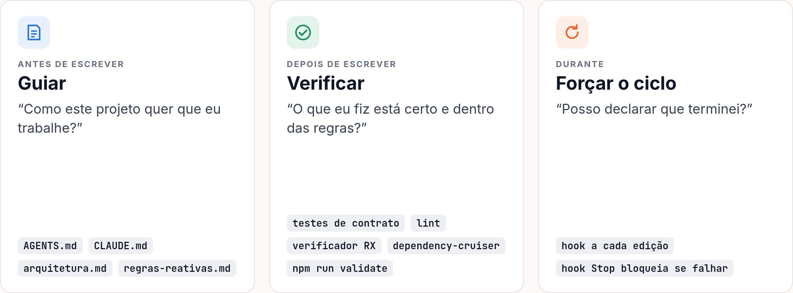
Um achado do próprio trabalho mostra que a ideia já chegou ao ecossistema: o gerador oficial de projetos do NestJS 12 já cria arquivos AGENTS.md, CLAUDE.md e skills para agentes, além de um módulo de telemetria (Seção 11.1). Ou seja, frameworks já começam a entregar pequenos harnesses prontos.
Esta seção retoma os conceitos dos slides Paradigma Orientado a Eventos — Programação Reativa da disciplina e mostra onde cada um aparece no trabalho.
Os slides partem do caso Carrinho → Fatura. No estilo imperativo, ou passivo, o carrinho é proativo: quando muda, ele chama métodos da fatura e altera o seu estado (“este muda esse”). A fatura é passiva e nem sabe que depende do carrinho. Gerenciar esse estado espalhado torna-se “exponencialmente complexo”: cada variável booleana a mais dobra o número de estados possíveis, e cada novo interessado obriga a modificar o módulo que muda.
No estilo reativo, o módulo que muda apenas emite eventos; quem depende dele observa esses eventos e se atualiza sozinho. Como resumem os slides, “o módulo que está sendo alterado é o responsável por definir a mudança”. Neste trabalho, o par equivalente é Leilões → Notificações (e também Leilões → estado, histórico e stream SSE), como mostra a Figura 2.
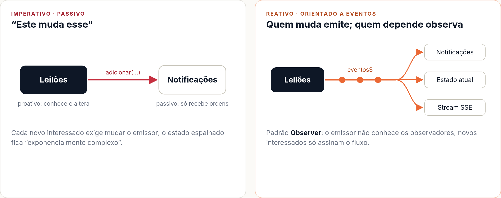
| Imperativo (anti-gabarito) | Reativo (gabarito / harness) |
|---|---|
LeiloesService guarda Map<string, Leilao> e altera campos (leilao.maiorLance = ...) | o estado é derivado do fluxo de eventos com scan |
ao aceitar um lance, chama notificacoesService.adicionar(...) | notificações assinam eventos$ e reagem sozinhas |
setTimeout para encerrar; clearTimeout ao prorrogar | o tempo é um fluxo: switchMap(prazo => timer(prazo)) |
Subject público usado como barramento | Subject privado (Sink); só Observable é exposto |
controller assina o Subject manualmente para o SSE | controller devolve um Observable (o NestJS assina) |
O padrão Observer (Gamma et al., 1994) define uma relação de um para muitos entre um sujeito (observável) e seus observadores: quando o sujeito muda, todos os observadores são notificados, sem que o sujeito precise conhecê-los. Aqui, o sujeito é o log de eventos dos leilões (eventos$) e os observadores são a projeção de estado, o temporizador de encerramento, o módulo de notificações e cada cliente conectado ao stream SSE.
Os slides descrevem um fluxo de dados (data stream) por quatro elementos. A Tabela 4 mostra a correspondência com o projeto.
| Conceito dos slides | Neste projeto |
|---|---|
| Sink (entrada: valores, eventos, objetos, erros) | private readonly entrada$ = new Subject<Entrada>() — comandos vindos do HTTP e do temporizador |
| Controller do stream | LeiloesService, o único que chama entrada$.next(...) |
| Stream | processamento$ → eventos$ (log de eventos com replay) |
| Listeners | estado$, notificações, temporizador, SSE |
| Filter (operadores) | filter(e => e.leilaoId === id), takeWhile(...) |
| Transforms (operadores) | scan(processar), map, concatMap, groupBy, switchMap |
StreamBuilder (Flutter) | o endpoint SSE GET /leiloes/:id/stream: a “view” que reage a cada evento |
O resumo da aula — crie streams de eventos e dados, combine com operadores, ouça para efeitos colaterais — vira o esqueleto da arquitetura exigida pelo harness (Figura 3). Comandos entram pelo Sink; o processamento com scan os transforma em eventos; e os ouvintes produzem efeitos: notificações, stream SSE e o temporizador, que realimenta o Sink com o comando de encerramento.
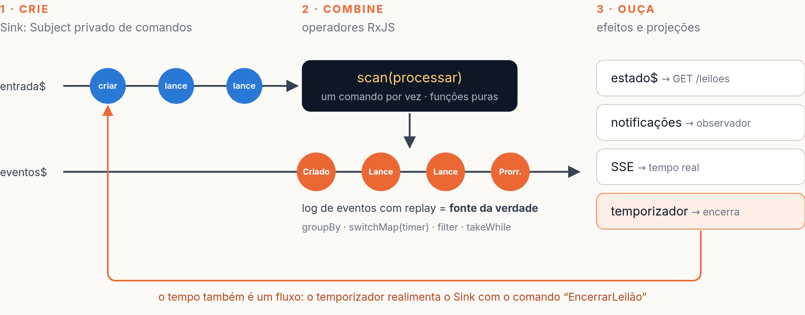
Os slides destacam quatro características da programação reativa. A Tabela 5 mostra como o harness as transforma em exigências.
| Característica | Regra ou artefato do harness |
|---|---|
| Funcional: evitar estado; funções de entrada e saída sobre streams | RX04 (estado mutável), RX08 (redutor puro), camada dominio/ pura |
| Menos é mais: operadores fazem muito com pouco código | padrões de código em docs/arquitetura.md |
| Tratamento de erros assíncronos | controllers devolvem Observable; erros viram respostas HTTP |
| Concorrência fácil | scan processa um comando por vez — o teste de 20 lances simultâneos verifica |
RxJS é a biblioteca de programação reativa para JavaScript e TypeScript da família ReactiveX. Seus conceitos centrais são: o Observable, uma fonte de valores ao longo do tempo; o Observer, que consome esses valores; a Subscription, o vínculo entre os dois, que pode ser cancelado; e o Subject, que é ao mesmo tempo Observable e Observer — por isso serve de porta de entrada (Sink) para um fluxo. Por convenção, variáveis que guardam Observables terminam com $.
A transformação dos fluxos é feita por operadores, funções puras encadeadas com pipe. A Tabela 6 lista os operadores que aparecem na arquitetura do projeto.
| Operador | O que faz | Papel no projeto |
|---|---|---|
scan | acumula valores, emitindo o acumulado a cada novo valor (como um reduce contínuo) | processa um comando por vez sobre o estado anterior; deriva estado e notificações |
shareReplay | compartilha uma única execução entre vários assinantes e repete os últimos valores para quem chega depois | log de eventos com replay completo; estado atual (último valor) |
concatMap | mapeia cada valor para um Observable e os executa em sequência | “desdobra” a lista de eventos de cada comando; executa os comandos do temporizador em ordem |
groupBy | divide um fluxo em sub-fluxos por chave | um sub-fluxo de prazos por leilão |
switchMap | mapeia para um novo Observable e cancela o anterior | cada novo prazo cancela o temporizador anterior (prorrogação) |
timer | emite após um intervalo ou em uma data | agenda o encerramento no instante encerraEm |
filter / takeWhile | seleciona valores / completa o fluxo quando a condição deixa de valer | stream SSE de um único leilão, que termina após LeilaoEncerrado |
takeUntil | completa o fluxo quando outro emite | encerra as assinaturas permanentes quando o módulo é destruído |
NestJS é um framework para servidores Node.js escrito em TypeScript, organizado em módulos, controllers (que tratam as rotas HTTP) e providers (serviços injetados por injeção de dependência). Três recursos dele são usados diretamente pela arquitetura reativa: controllers podem devolver um Observable, que o próprio framework assina e cancela; o decorador de Server-Sent Events transforma um Observable em um stream text/event-stream; e os ganchos de ciclo de vida onModuleInit e onModuleDestroy são o lugar certo para criar e encerrar assinaturas permanentes. O projeto usa NestJS 12 com TypeScript em módulos ESM, o que exige imports relativos terminados em .js.
Server-Sent Events (SSE) é um mecanismo da plataforma web em que o servidor mantém uma resposta HTTP aberta e envia mensagens de texto à medida que elas ocorrem. É o canal “em tempo real” da API de leilões.
Um linter analisa o código sem executá-lo, procurando padrões problemáticos. Linters genéricos (como o oxlint, usado no projeto) cobrem erros comuns, mas não conhecem as regras de um paradigma ou de uma arquitetura específica. Para isso o trabalho usa duas abordagens complementares:
subscribe dentro de um controller” ou “atribuição a um campo da classe fora do construtor”. O verificador de regras reativas (Seção 4.5) é construído assim.dominio/ só importam outros de dominio/” ou “não há ciclos”.Com três observações por condição, testes de significância têm pouco poder. Para duas amostras de três valores, há C(6,3) = 20 maneiras de dividir os seis valores entre os grupos; a separação mais extrema tem probabilidade 1/20 = 0,05 em cada cauda, de modo que o menor p bilateral possível no teste de Mann–Whitney (Mann; Whitney, 1947) é 0,1. Por isso a análise é descritiva: média, desvio-padrão amostral, mediana, intervalo, diferença entre médias e variação percentual.
Como medida de tamanho de efeito foi usado o delta de Cliff (Cliff, 1993), uma estatística não paramétrica que não supõe normalidade. Para duas amostras A e B, ele compara todos os pares (a, b):
δ = [ #(a > b) − #(a < b) ] / (nA · nB)
O resultado varia de −1 a +1. Um δ = 1 significa que todo valor de A é maior que todo valor de B (as distribuições não se sobrepõem); δ = 0, que nenhuma tende a ser maior. Neste trabalho δ positivo indica valores maiores em A (sem harness). A magnitude segue os limiares de Romano et al. (2006): |δ| < 0,147 desprezível; < 0,33 pequeno; < 0,474 médio; ≥ 0,474 grande.
A Aula 1 de Paradigmas de Linguagens de Programação lista, entre as categorias especiais de linguagens e paradigmas, a programação orientada a agentes e a manipulação de eventos. Este trabalho combina as duas: um agente de IA programando no paradigma orientado a eventos, e o harness como forma de impor esse paradigma ao agente.
A funcionalidade que o agente implementou nas seis execuções, por que ela foi escolhida e as duas implementações de referência que validaram o instrumento.
Foram avaliadas cinco alternativas de domínio: carrinho e fatura (o exemplo dos slides), status de pedido de delivery (o caso PedeAiVai dos slides), monitor de sensores, placar ao vivo e leilão em tempo real. O leilão foi escolhido (ADR-002) porque reúne, num tamanho que cabe em uma sessão de agente, todos os ingredientes que diferenciam o estilo reativo do imperativo:
setTimeout e clearTimeout) e onde os operadores reativos se destacam (switchMap(timer)).A especificação completa, com cerca de 150 linhas, está em experimento/prompts/tarefa.md e foi entregue ao agente, palavra por palavra, nas duas condições. Ela pede explicitamente o uso de programação reativa com RxJS — o que torna a comparação mais rigorosa: o agente sem harness também sabia qual paradigma era esperado.
Sempre que a API devolve um leilão, ele tem exatamente este formato:
{
"id": "string única gerada pela API",
"titulo": "Bicicleta aro 29",
"lanceInicial": 100, "incrementoMinimo": 10, "prorrogacaoSegundos": 5,
"status": "ABERTO",
"maiorLance": { "participante": "ana", "valor": 150, "ocorridoEm": "2026-11-23T13:00:05.000Z" },
"totalLances": 1,
"encerraEm": "2026-11-23T13:01:00.000Z",
"vencedor": null
}
status é "ABERTO" ou "ENCERRADO"; maiorLance é null enquanto não houver lance aceito; totalLances conta apenas lances aceitos; encerraEm pode mudar com a prorrogação; e vencedor fica null enquanto o leilão está aberto e, depois, recebe o participante do maior lance (ou continua null se não houve lances). Os dados ficam apenas em memória e o servidor deve funcionar com npm run build seguido de npm run start:prod.
| Funcionalidade | Rota | Aspecto reativo exercitado |
|---|---|---|
| Criar, listar e consultar leilões | POST /leiloes, GET /leiloes, GET /leiloes/:id | estado como projeção do log |
| Dar lance (com validações em ordem) | POST /leiloes/:id/lances | comandos → eventos; processamento sequencial |
| Histórico de eventos | GET /leiloes/:id/eventos | log de eventos como fonte da verdade |
| Acompanhar em tempo real | GET /leiloes/:id/stream (SSE) | stream com replay que termina sozinho |
| Notificações por participante | GET /participantes/:nome/notificacoes | observador independente (Observer) |
| Encerramento automático | — | o tempo como fluxo (timer) |
| Prorrogação anti-sniping | — | prazo que muda: switchMap cancela o temporizador anterior |
| Lances simultâneos | — | consistência sob concorrência |
A criação valida o corpo: titulo é obrigatório e não vazio; lanceInicial e incrementoMinimo são números maiores que zero; duracaoSegundos é inteiro de 1 a 86 400; prorrogacaoSegundos é inteiro opcional de 0 a 3 600 (padrão 0). Sucesso devolve 201; corpo inválido, 400. A listagem devolve os leilões na ordem de criação.
As regras do lance são verificadas nesta ordem, e a ordem importa (a suíte oculta testa, por exemplo, que um leilão inexistente responde 404 antes de validar o corpo):
participante string não vazia; valor número maior que zero): 400.ENCERRADO ou instante atual ≥ encerraEm): 409 com { "aceito": false, "motivo": "LEILAO_ENCERRADO" }.PARTICIPANTE_JA_LIDERA.VALOR_ABAIXO_DO_MINIMO e o campo valorMinimo. O mínimo é o lanceInicial enquanto não há lances e, depois, maiorLance.valor + incrementoMinimo. Um lance igual ao mínimo é aceito.{ "aceito": true, "leilao": … }.Lances simultâneos devem ser processados um de cada vez, na ordem de chegada, sem perder nem duplicar eventos.
Todo evento tem o formato { sequencia, tipo, leilaoId, ocorridoEm, dados }. A sequencia começa em 1 em cada leilão e cresce de 1 em 1, sem buracos; LeilaoEncerrado é sempre o último evento de um leilão. Respostas 400, 404 e 409 não geram eventos.
| Tipo | Quando | Dados |
|---|---|---|
LeilaoCriado | leilão criado | titulo, lanceInicial, incrementoMinimo, prorrogacaoSegundos, encerraEm |
LanceAceito | lance aceito | participante, valor |
LanceRejeitado | lance recusado com 422 | participante, valor, motivo |
LeilaoProrrogado | prorrogação | encerraEmAnterior, encerraEm |
LeilaoEncerrado | encerramento | vencedor (ou null), valor (ou null) |
Encerramento automático. Quando o instante encerraEm é atingido, o leilão deve ser encerrado sozinho, sem nenhuma requisição, em até 500 ms: o status passa a ENCERRADO, o vencedor é definido e o evento LeilaoEncerrado é emitido.
Prorrogação (anti-sniping). Se um lance for aceito quando faltar menos de prorrogacaoSegundos para encerraEm, o leilão é prorrogado: encerraEm passa a ser o instante do lance mais prorrogacaoSegundos, e o evento LeilaoProrrogado é emitido logo após o LanceAceito. Com prorrogacaoSegundos igual a zero nunca há prorrogação; pode haver várias prorrogações seguidas. A Figura 4 ilustra a vida de um leilão com uma prorrogação.
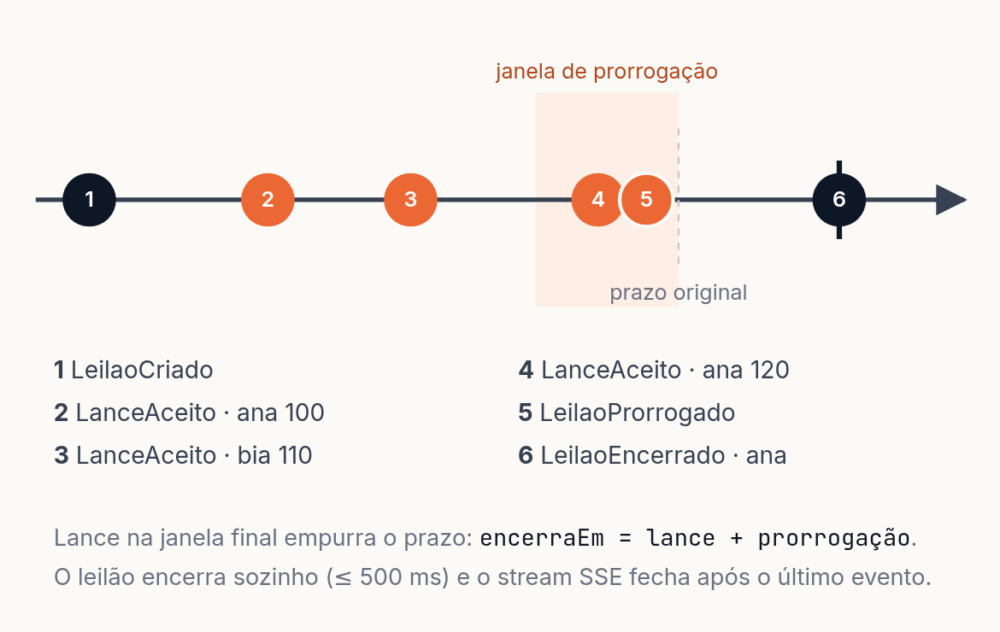
A rota de notificações devolve, em ordem cronológica, dois tipos de aviso: LANCE_SUPERADO, quando o participante tinha o maior lance de um leilão e outro participante teve um lance aceito nesse leilão (com valorAnterior e novoValor); e LEILAO_VENCIDO, quando o leilão é encerrado e o participante é o vencedor.
O stream SSE, ao conectar, envia todos os eventos já ocorridos do leilão, em ordem, e depois cada novo evento assim que ele acontece. Depois do LeilaoEncerrado, o servidor fecha a conexão; se o leilão já estiver encerrado ao conectar, o cliente recebe o histórico completo e a conexão é finalizada.
Antes de qualquer execução com agentes, foram escritas duas implementações completas da especificação, guardadas no kit de avaliação oculto (avaliacao/). Elas não foram mostradas aos agentes; servem para validar o instrumento de medida (Seção 5.7).
Segue a arquitetura que o harness pede e prova que ela é implementável. O domínio é puro: decidir(estado, comando, instante) devolve os eventos que um comando gera e evoluir(estado, evento) aplica um evento ao estado; nenhuma função do domínio lê o relógio, gera identificadores ou faz entrada e saída — tudo chega por parâmetro. O serviço de aplicação monta os fluxos:
/** Sink: única porta de entrada de mudanças. Privado (nunca exposto). */ private readonly entrada$ = new Subject<Entrada>(); /** Processa um comando por vez, na ordem de chegada (scan é sequencial). */ private readonly processamento$ = this.entrada$.pipe( scan((anterior, entrada) => processar(anterior.estado, entrada), PROCESSAMENTO_INICIAL), share({ resetOnRefCountZero: false }), ); /** Log de eventos de todos os leilões; novos assinantes recebem o histórico completo. */ readonly eventos$ = this.processamento$.pipe( concatMap((p) => from(p.eventos)), shareReplay({ bufferSize: Infinity, refCount: false }), ); /** Comandos de encerramento gerados pelo tempo (reagendados a cada prorrogação). */ private readonly encerramentos$ = this.eventos$.pipe( groupBy((e) => e.leilaoId), mergeMap((eventosDoLeilao$) => eventosDoLeilao$.pipe( takeWhile((e) => e.tipo !== 'LeilaoEncerrado'), filter(ehPrazo), switchMap((e) => timer(new Date(e.dados.encerraEm)).pipe( map(() => ({ tipo: 'EncerrarLeilao', leilaoId: eventosDoLeilao$.key, prazo: e.dados.encerraEm })), )), )), ); onModuleInit(): void { // Conecta as projeções desde o início e liga a realimentação do temporizador. merge(this.eventos$, this.estado$).pipe(takeUntil(this.destruir$)).subscribe(); this.encerramentos$.pipe(concatMap((c) => this.executar(c)), takeUntil(this.destruir$)).subscribe(); }
Um detalhe merece atenção: o método executar(comando) implementa requisição e resposta sobre o fluxo. Ele gera um identificador para a entrada, assina o fluxo de processamento esperando o resultado daquele identificador e só então envia o comando ao Sink — com merge, a assinatura acontece antes do envio, e a resposta não se perde. Assim um controller HTTP pode devolver o resultado de um comando como um Observable.
O gabarito é organizado em módulos e camadas: leiloes/dominio/ (tipos e regras puras, com testes), leiloes/aplicacao/ (Sink, scan, log, projeções, temporizador), leiloes/http/ (controller e validação), e o mesmo para notificacoes/, cujo serviço apenas observa eventos$ com um redutor puro.
É uma implementação imperativa típica, escrita de propósito para funcionar e violar as regras: estado em Map alterado diretamente, Subject público, o serviço de leilões chamando o de notificações e temporizadores com setTimeout.
private leiloes = new Map<string, Leilao>(); private timers = new Map<string, NodeJS.Timeout>(); readonly eventos$ = new Subject<Evento>(); constructor(private readonly notificacoes: NotificacoesService) {} // em darLance(...) leilao.maiorLance = { participante, valor, ocorridoEm: new Date(agora).toISOString() }; leilao.totalLances++; this.notificacoes.adicionar(anterior.participante, { tipo: 'LANCE_SUPERADO', … }); private agendarEncerramento(id: string): void { clearTimeout(this.timers.get(id)); const ms = Math.max(0, Date.parse(leilao.encerraEm) - Date.now()); this.timers.set(id, setTimeout(() => this.encerrar(id), ms)); }
A Figura 5 coloca as duas implementações lado a lado, com as linhas que violam as regras destacadas. As duas passam nos mesmos 41 testes de aceitação; só o verificador de regras as distingue.
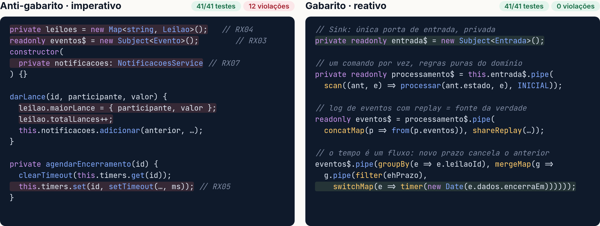
Cada item do enunciado transformado em um artefato concreto: instruções, regras, verificadores, testes, script de validação e hooks.
O harness fica em projetos/harness/ e é uma camada: nas execuções B ele é copiado por cima do projeto base (scripts/lib/montar-projeto.sh <destino> harness). A base é um projeto NestJS 12 limpo; o harness acrescenta 16 arquivos. A Tabela 9 mostra como cada item do enunciado virou um componente.
| Enunciado | Componente | Arquivo(s) |
|---|---|---|
| Instruções para agentes | regra de ouro, comandos, ambiente (ESM), arquitetura resumida, tabela de regras, testes, hooks | AGENTS.md, CLAUDE.md |
| Regras arquiteturais | arquitetura orientada a eventos (Sink → scan → log → projeções), camadas, direção emissor → observador, 9 regras reativas com exemplos | docs/arquitetura.md, docs/regras-reativas.md, .dependency-cruiser.cjs |
| Testes | 11 testes de contrato da API + exigência de teste unitário para cada arquivo do domínio | test/contrato/, scripts/verificar-estrutura.mjs |
| Lint | lint genérico (oxlint) + lint arquitetural (RX01–RX09) + camadas + estrutura de pastas | .oxlintrc.json, scripts/verificar-reatividade.mjs, .dependency-cruiser.cjs, scripts/verificar-estrutura.mjs |
| Scripts de validação | npm run validate: 7 etapas, resumo e saída enxuta para o agente | scripts/validar.sh |
| Além do enunciado: hooks | verificação a cada edição e bloqueio do encerramento enquanto a validação falhar | .claude/settings.json, scripts/hooks/ |
O AGENTS.md é o primeiro arquivo que o agente lê. Ele começa por uma regra de ouro:
“Uma tarefa só está concluída quando npm run validate termina com VALIDAÇÃO OK. Rode npm run validate antes de dizer que terminou e corrija tudo o que ele apontar. Nunca desative, apague ou afrouxe testes, regras de lint, o verificador, a configuração do dependency-cruiser ou os hooks para ‘fazer passar’. Se achar que uma regra ou um teste está errado, pare e explique ao usuário.”
Em seguida vêm: a tabela de comandos (validate, build, test, test:e2e, lint, regras, dependencias, estrutura); as particularidades do ambiente (TypeScript ESM com imports terminados em .js, Vitest em vez de Jest, dados só em memória, nenhuma biblioteca de eventos além do RxJS); a arquitetura resumida em árvore de pastas; o fluxo reativo esperado em seis passos; a tabela das nove regras com “nunca” e “em vez disso”; as regras de testes; e a descrição dos hooks.
O CLAUDE.md tem seis linhas: importa o AGENTS.md (@AGENTS.md) e acrescenta duas instruções específicas do Claude Code — não alterar os hooks e, se um hook bloquear o encerramento, ler a saída, corrigir e validar de novo.
O documento docs/arquitetura.md descreve o fluxo da Figura 6 e a correspondência com os conceitos da disciplina (Sink, Stream, Controller, Listeners, operadores e propagação de mudança).
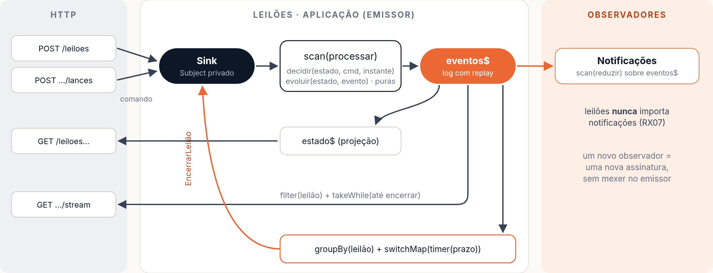
scan aplica as funções puras do domínio; o log eventos$ alimenta o estado, o stream SSE, o temporizador (que realimenta o Sink) e o módulo observador de notificações.Cada módulo (leiloes, notificacoes) tem três camadas, com dependências permitidas bem definidas:
| Camada | Contém | Pode importar |
|---|---|---|
dominio/ | tipos, eventos, comandos e funções puras: decidir, evoluir, redutores de projeções | apenas outros arquivos de dominio/ |
aplicacao/ | serviços @Injectable() com os fluxos RxJS: Sink, log, projeções, temporizadores | dominio/, RxJS, NestJS e a API pública de aplicacao/ de outro módulo |
http/ | controllers e validação de entrada | aplicacao/ e tipos de dominio/ |
O documento traz ainda cinco padrões de código genéricos — com nomes como Comando, Evento e Estado, sem nada do domínio de leilões: (1) Sink privado com processamento sequencial por scan; (2) requisição e resposta sobre o fluxo de comandos; (3) tempo como fluxo, para prazos que podem mudar; (4) stream SSE como projeção filtrada do log; e (5) observador em outro módulo. A decisão de incluir esses padrões (ADR-011) foi deliberada: é o conhecimento que um time real colocaria em seu repositório, e sem exemplos regras como “derive o estado do fluxo” ficam abstratas demais. O custo é aumentar a vantagem de B — exatamente o efeito que o experimento quer medir — e isso é declarado como ameaça à validade. O padrão 3 inclui também a armadilha do temporizador descoberta durante a validação (Seção 5.8).
O paradigma foi operacionalizado em nove regras verificáveis por máquina, documentadas em docs/regras-reativas.md com exemplos de código errado e certo.
| Regra | O que proíbe | Em vez disso | Princípio |
|---|---|---|---|
| RX01 subscribe-aninhado | subscribe dentro de subscribe ou de operador | switchMap, mergeMap, concatMap, exhaustMap | composição com operadores de achatamento |
| RX02 subscribe-fora-do-ciclo-de-vida | subscribe em controller ou método chamado por requisição | controllers devolvem Observable; assinaturas só no onModuleInit, com takeUntil(destruir$) | assinaturas permanentes têm dono e fim |
| RX03 subject-exposto | Subject público, exportado ou devolvido | Sink privado + asObservable() | só o dono do Sink emite |
| RX04 estado-mutavel | campos de classe ou variáveis de módulo alterados por métodos | eventos$.pipe(scan(evoluir, inicial), shareReplay(1)) | estado derivado do fluxo |
| RX05 temporizador-imperativo | setTimeout, setInterval, node:timers | timer, interval, delay, switchMap(() => timer(…)) | tempo como fluxo |
| RX06 eventos-fora-do-rxjs | EventEmitter, @nestjs/event-emitter, EventTarget | Subject / Observable | um único modelo de eventos |
| RX07 emissor-conhece-observador | leilões importando notificações | notificações assinam eventos$ | Observer: quem muda não conhece quem reage |
| RX08 acumulador-mutado | redutor do scan que altera o acumulador | scan((acc, e) => [...acc, e]) | redutores puros |
| RX09 dependencia-circular | ciclos de import | tipos compartilhados em dominio/tipos.ts | dependências em uma direção |
Dois exemplos do documento ilustram o estilo. Para a RX04:
// ❌ private leiloes = new Map<string, Leilao>(); darLance(...) { this.leiloes.get(id)!.maiorLance = lance; this.total++; } // ✅ readonly estado$ = this.eventos$.pipe(scan(evoluir, ESTADO_INICIAL), shareReplay(1));
E para a RX05, em que a troca de prazo cancela o temporizador anterior sem nenhum clearTimeout:
// ❌ clearTimeout(this.timers.get(id)); this.timers.set(id, setTimeout(() => this.encerrar(id), ms)); // ✅ prazos$.pipe(switchMap((prazo) => timer(new Date(prazo)))) // novo prazo cancela o anterior
O script scripts/verificar-reatividade.mjs usa a API do compilador TypeScript para percorrer a árvore sintática de cada arquivo .ts de src/, exceto testes, e reportar as ocorrências de cada regra com arquivo, linha, trecho, descrição e “como corrigir”. Ele não depende da estrutura de pastas — vale igualmente para um projeto que não conhece a arquitetura do harness —, o que permitiu usar o mesmo verificador como instrumento de medida nas duas condições (Capítulo 5). Há um modo --hook, que verifica apenas o arquivo recém-editado e devolve o resultado no formato esperado pelo Claude Code.
Por ser estático e heurístico, ele tem limitações conhecidas e documentadas: não segue apelidos (const l = this.mapa.get(id); l.x = 1 não é detectado) e a RX07 baseia-se em nomes de arquivos e caminhos (leil|lance|auction|bid × notif). O verificador tem 10 casos de teste próprios — um por regra e um de código correto —, todos aprovados.
O dependency-cruiser (versão 18.9.0) verifica seis regras sobre o grafo de imports: sem-ciclos, dominio-puro, aplicacao-nao-conhece-http, emissor-nao-conhece-observadores, observador-usa-api-publica e sem-event-emitter. O verificador de estrutura (scripts/verificar-estrutura.mjs) completa o quadro com três regras próprias:
.ts de src/ fica em src/<modulo>/{dominio,aplicacao,http}/ (na raiz do módulo, só o <modulo>.module.ts).dominio/ com código (não só tipos) tem um .spec.ts ao lado.*.controller.ts só em http/; *.service.ts só em aplicacao/.A regra E02 é a origem provável de um dos efeitos mais visíveis do harness: o número de testes escritos pelo agente (Seção 9.6).
O harness traz 11 testes de contrato em test/contrato/leiloes.e2e-spec.ts, que sobem o AppModule e exercitam a API por HTTP: criação no formato do recurso; corpo inválido (400); leilão inexistente (404); lance aceito atualizando maiorLance e totalLances; lance abaixo do mínimo (422 com valorMinimo); participante que já lidera (422); histórico em ordem com sequência 1..n; encerramento automático com vencedor; lance após o encerramento (409); stream SSE que envia o histórico e fecha após o encerramento; e notificação LANCE_SUPERADO.
Esses testes cobrem só o essencial, de propósito (ADR-013). O AGENTS.md avisa: “implemente a especificação inteira da tarefa, não apenas o que os testes verificam”. A suíte de avaliação tem 41 testes, dos quais 27 não têm nenhum correspondente no harness (Seção 5.4).
npm run validate (scripts/validar.sh) roda sete etapas, sempre todas — mesmo que uma falhe —, imprime uma linha por etapa com ✔ ou ✖ e o tempo, mostra as últimas 80 linhas da saída das etapas que falharam e termina com VALIDAÇÃO OK ou VALIDAÇÃO FALHOU: <etapas>. A saída foi desenhada para ser lida por um agente: curta, previsível e com os erros em destaque. Cada execução registra uma linha no log do harness.
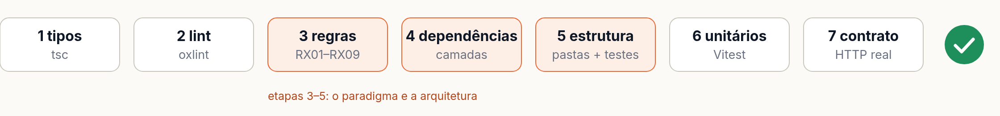
npm run validate. As etapas 3 a 5 verificam o paradigma e a arquitetura.| # | Etapa | Ferramenta | Pega… |
|---|---|---|---|
| 1 | tipos | tsc --noEmit | erros de compilação (por exemplo, imports ESM sem .js) |
| 2 | lint | oxlint | problemas genéricos de código |
| 3 | regras-reativas | verificar-reatividade.mjs | RX01–RX09 (paradigma) |
| 4 | dependencias | dependency-cruiser | camadas, ciclos, emissor importando observador |
| 5 | estrutura | verificar-estrutura.mjs | arquivos fora das camadas, domínio sem teste |
| 6 | testes-unitarios | Vitest | testes do domínio escritos pelo agente |
| 7 | testes-contrato | Vitest + servidor em porta livre | contrato HTTP essencial |
O arquivo .claude/settings.json configura três hooks (ADR-010), cujo formato foi conferido na documentação oficial da versão 2.1.x do Claude Code antes da implementação:
Edit|Write|MultiEdit: depois de cada edição, roda o verificador de regras no arquivo editado e, se houver violações, as mostra ao agente.npm run validate. Se a validação falhar, bloqueia o encerramento e devolve os erros ao agente — no máximo três vezes por pedido do usuário, para evitar laços infinitos (além do limite nativo de continuações do próprio Claude Code).saida="$(bash scripts/validar.sh 2>&1)"; status=$? if [ $status -eq 0 ]; then rm -f "$CONTADOR"; registrar "stop liberado (validação ok)"; exit 0 fi n=$(cat "$CONTADOR" 2>/dev/null || echo 0) if [ "$n" -ge "$LIMITE" ]; then rm -f "$CONTADOR"; registrar "stop liberado (limite de $LIMITE bloqueios atingido)"; exit 0 fi n=$((n + 1)); echo "$n" > "$CONTADOR"; registrar "stop bloqueado $n/$LIMITE" # devolve ao Claude Code: { "decision": "block", "reason": "<erros da validação>" }
Cada hook e cada validação acrescentam uma linha a .harness/hooks.log, que é copiado para experimento/execucoes/B*/harness-hooks.log ao final de cada execução. Esse registro é a evidência de como o harness atuou (Seção 9.7).
O harness não traz a implementação da funcionalidade: nenhum arquivo do domínio de leilões é entregue pronto. Também não traz todos os testes: os 11 testes de contrato cobrem o essencial, e a suíte de avaliação, com 41, fica fora do alcance do agente. Ele contém regras, verificadores, padrões genéricos e o ciclo de validação.
Antes do experimento, o gabarito foi montado com o harness e passou nas sete etapas do npm run validate, em cerca de 13 segundos. Os hooks foram testados com entradas simuladas: uma edição com violação fez o hook terminar com código 2, que leva as violações ao agente; um Stop com validação falhando foi bloqueado três vezes e depois liberado; um novo prompt zerou o contador; e um Stop com validação correta foi liberado de imediato.
O kit oculto que mediu erros e violações em cada entrega, o mesmo para as duas condições, e como ele foi validado antes de qualquer execução.
O instrumento fica na pasta avaliacao/ do repositório principal. Os agentes nunca tiveram acesso a ela: as execuções rodaram em pastas fora do repositório (Seção 6.6).
| Componente | Arquivo | Mede |
|---|---|---|
| Suíte de aceitação | aceitacao/*.test.ts (41 testes) | erros funcionais, caixa-preta via HTTP contra npm run start:prod |
| Verificador de regras | cópia de verificar-reatividade.mjs do repositório principal | violações arquiteturais RX01–RX09 |
| Avaliador | avaliar.mjs | orquestra tudo e gera metricas.json, avaliacao.md e o prompt de intervenção |
| Gabarito | referencia/src/ | implementação reativa correta (valida o instrumento) |
| Anti-gabarito | anti-gabarito/src/ | implementação imperativa correta (valida o instrumento) |
| Testes do verificador | verificador/ (10 casos) | o próprio verificador |
A escolha de testes caixa-preta e de um verificador independente da estrutura de pastas (ADR-007) garante justiça entre as condições: os testes valem para qualquer implementação, e o verificador não penaliza A por não conhecer a organização em camadas exigida pelo harness. Subir o servidor real, em vez de instanciar o módulo nos testes, evita falsos negativos causados por configurações feitas no main.ts.
tsc --noEmit e conta os erros de tipo, incluindo os dos testes escritos pelo agente.npm run build e registra se o build passou.npm run start:prod em uma porta livre e roda a suíte de aceitação duas vezes; um teste conta como falho se falhar em qualquer repetição e é marcado instável se oscilar.subscribe, imports do RxJS e dependências adicionadas.O critério de aprovação é: build ok, 41/41 testes e zero violações.
| Arquivo | Testes | Cobre |
|---|---|---|
01-criacao | 12 | formato do recurso, padrão de prorrogacaoSegundos, ids únicos, 6 validações 400, GET 200/404, ordem da listagem |
02-lances | 10 | lance inicial, mínimo com incremento, limite exato, participante que já lidera, 404 antes do 400, 3 validações 400, recusas não alteram estado |
03-eventos | 3 | sequência e dados de cada evento, 400/404 não geram eventos, 404 do histórico |
04-tempo | 7 | encerramento automático, sem lances, 409 após encerrar, prorrogação, fora da janela, prorrogação 0, várias prorrogações |
05-notificacoes | 3 | LANCE_SUPERADO em ordem, LEILAO_VENCIDO, lista vazia |
06-stream | 4 | text/event-stream + histórico, tempo real, fecha após o encerramento, leilão já encerrado |
07-concorrencia | 2 | 20 lances simultâneos sem perder nem duplicar eventos; leilões independentes |
Para cada um dos 41 testes ocultos, verificou-se se havia um teste equivalente entre os 11 do harness. O resultado: 7 cobertos (✓), 7 parcialmente (◐) e 27 sem correspondente (✗). Entre os não cobertos estão as cinco validações numéricas da criação, a ordem da listagem, o lance exatamente igual ao mínimo, o 404 antes do 400, os quatro testes de prorrogação, o LEILAO_VENCIDO, o stream em tempo real e os dois testes de concorrência. Dois terços da suíte, portanto, medem se o agente implementou a especificação — e não se ele “decorou” os testes do harness.
Quando um checkpoint não é aprovado, o avaliador escreve o texto da revisão: build quebrado (com a saída do compilador), testes que falharam (com a mensagem de erro) e violações agrupadas por regra, com arquivo, linha, trecho e “como corrigir”. O condutor apenas envia esse texto ao agente. Padronizar o conteúdo da intervenção (ADR-006) remove a subjetividade da revisão humana e torna a contagem replicável. O Apêndice C reproduz, na íntegra, a intervenção enviada na execução A1.
O verificador usado na avaliação é o mesmo descrito na Seção 4.5, mas na versão do repositório principal: mesmo que um agente B alterasse o verificador do seu projeto, a medida não mudaria. Por não depender da estrutura de pastas, ele mede a condição A — que não conhece as camadas exigidas pelo harness — com o mesmo critério da condição B.
| Verificação | Resultado |
|---|---|
| Gabarito (reativo) na suíte de aceitação | 41/41 |
| Gabarito no verificador | 0 violações |
Gabarito + harness no npm run validate | 7/7 etapas |
| Anti-gabarito (imperativo) na suíte de aceitação | 41/41 — os testes não penalizam o estilo |
| Anti-gabarito no verificador | 12 violações (RX02, RX03, RX04 ×5, RX05 ×3, RX07 ×2) — o verificador discrimina o paradigma |
| Casos de teste do verificador | 10/10 |
| Estresse: 10 rodadas seguidas da suíte contra o mesmo servidor (gabarito corrigido) | 410/410 execuções verdes |
| Projeto com erro de compilação | build falhou, 0/41, prompt com o erro do compilador |
O par gabarito/anti-gabarito é a demonstração central do instrumento: mesma funcionalidade, mesmos 41 testes passando, paradigmas opostos. Os testes medem comportamento; o verificador mede paradigma; um não substitui o outro.
A primeira bateria de estresse mostrou falhas intermitentes nos testes de tempo. A investigação revelou a causa: em cerca de 8% dos casos (24 de 300 medidos), o temporizador do Node dispara 1 milissegundo antes de Date.now() alcançar o prazo. O gabarito decidia o encerramento comparando o relógio (agora >= encerraEm), concluía “ainda não venceu” e, como nenhum novo temporizador era agendado, o leilão nunca encerrava (Figura 8).
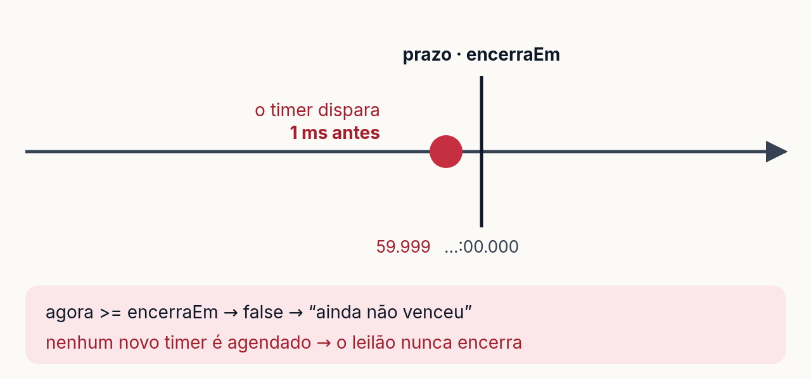
A correção (ADR-008) foi fazer o comando EncerrarLeilao carregar o prazo para o qual foi agendado: o domínio encerra se esse prazo ainda é o vigente e ignora o comando se houve prorrogação. Depois disso, dez rodadas seguidas produziram 410 de 410 execuções verdes. Três lições ficaram:
docs/arquitetura.md), como faria um time real.O desenho do experimento, o que foi mantido igual entre as condições, como cada medida foi definida, o procedimento de cada execução e as ameaças à validade.
O experimento tem uma variável independente — a presença do harness — em duas condições, com três repetições cada (ADR-003):
| Condição | Projeto entregue ao agente | Execuções |
|---|---|---|
| A — sem harness | projetos/base | A1, A2, A3 |
| B — com harness | projetos/base + projetos/harness | B1, B2, B3 |
A ordem foi contrabalançada: A1 → B1 → B2 → A2 → A3 → B3. Assim, efeitos de ordem — aprendizado do condutor ou variações do serviço do modelo ao longo do dia — não favorecem nenhuma condição. As repetições capturam o não determinismo do modelo: a mesma entrada pode gerar soluções diferentes.
experimento/prompts/tarefa.md), incluindo o pedido de usar programação reativa com RxJS.claude-sonnet-5-5, esforço medium, modo de permissão acceptEdits, limite de 3 600 s por chamada; conversa nova a cada execução; sem instruções globais do usuário (verificado no passo 0).CLAUDE.md das pastas-pai.| Medida | Definição | Fonte |
|---|---|---|
| Erros | build quebrado (0/1) + testes de aceitação ocultos falhando (de 41), na primeira entrega e no final; um teste que falha em qualquer das 2 repetições conta como falha. Complementares: erros de tipo e de lint genérico | checkpoints/*/metricas.json |
| Violações arquiteturais | ocorrências de RX01–RX09 detectadas pelo verificador, na primeira entrega e no final | idem |
| Intervenções humanas | prompts de correção (rodadas) + edições manuais de código + outras mensagens humanas após o prompt inicial | execucao.json + registro do implementador |
| Tempo | minutos entre a primeira mensagem humana e o último checkpoint | transcrição + execucao.json |
| Esforço do agente | chamadas de ferramenta, erros de ferramenta, tokens | transcrição (resumo-sessao.json) |
| Produto | linhas de código, casos de teste escritos pelo agente, dependências adicionadas | metricas.json |
| Atuação do harness | edições verificadas / com violação, bloqueios do Stop, validações | harness-hooks.log |
Primeira entrega é o estado do código quando o agente diz que terminou o prompt inicial, antes de qualquer intervenção. É a medida mais limpa do efeito do harness (H1 e H2). O número de intervenções mede o custo humano para chegar a uma solução correta e conforme (H3).
Cada execução segue o mesmo ciclo, automatizado por scripts:
scripts/preparar-execucao.sh <ID>): cria a pasta ~/projetos-leilao/<ID> a partir da base (mais o harness, em B), inicializa um repositório git próprio com o commit inicial e registra a configuração em execucao.json.scripts/rodar-implementador.sh <ID> inicial): abre uma sessão nova do Claude Code dentro da pasta e envia a tarefa.scripts/checkpoint.sh <ID> entrega): faz o commit do estado atual com autor “Agente de IA”, roda o avaliador completo e, se reprovado, gera o prompt de intervenção.rodar-implementador.sh <ID> intervencao) seguida de checkpoint de correção, repetidos enquanto houver problemas e os critérios de parada permitirem.scripts/finalizar-execucao.sh <ID>): importa o histórico como ramo execucoes/<ID> do repositório principal (com as tags entrega e final), copia a transcrição da sessão e o log dos hooks, gera o resumo automático e apaga a pasta de trabalho.O protocolo previa, inicialmente, que o próprio aluno conduzisse as execuções. Depois de uma primeira tentativa descartada (Seção 8.4), a condução foi delegada a outro agente de IA — o Antigravity, com o modelo Gemini 4 —, seguindo um roteiro fechado (experimento/ROTEIRO-CONDUTOR.md). Os papéis ficaram assim separados:
scripts/rodar-implementador.sh, em modo não interativo, com parâmetros fixos em experimento/config-implementador.env (MODELO=claude-sonnet-5-5, ESFORCO=medium, LIMITE_SEGUNDOS=3600). O script salva o texto exato de cada prompt enviado, a saída bruta e o identificador da sessão.experimento/auditoria/log-condutor.md e escreve os relatórios. Ele faz o papel do “humano” do protocolo.O roteiro do condutor lista o que ele pode fazer — rodar apenas os scripts do experimento e comandos de leitura do git, ler os registros, editar só os arquivos de log e relatório — e o que ele não pode: escrever ou editar código na pasta de uma execução; mandar ao implementador qualquer texto que não seja gerado pelos scripts; abrir o gabarito, o anti-gabarito ou os testes ocultos; alterar a infraestrutura; mudar a ordem, pular ou repetir execuções; rodar o Claude Code diretamente; apagar ramos ou resultados; interromper uma chamada antes do limite; e “arredondar” ou omitir resultados ruins. Uma seção de exceções define o que fazer em caso de falha técnica, tempo esgotado ou limite de uso da conta.
Cada execução deixa um conjunto completo de evidências em experimento/execucoes/<ID>/: execucao.json (configuração e checkpoints), registro.md (preenchido pelo condutor), um diretório por checkpoint com metricas.json, avaliacao.md, o prompt de intervenção e os logs de cada etapa, a transcrição completa da sessão do agente, o resumo da sessão (resumo-sessao.json, produzido por scripts/analisar-sessao.mjs), o registro das chamadas do implementador, o log dos hooks (em B), o resumo automático e o relatório da execução.
No git, cada checkpoint é um commit e cada execução vira um ramo execucoes/<ID> com as tags execucoes/<ID>/entrega e execucoes/<ID>/final; assim, git diff execucoes/A1/entrega execucoes/A1/final mostra exatamente o que mudou depois das intervenções. Ao final de cada execução, o condutor faz uma auditoria de isolamento: procura o nome do repositório principal na transcrição da sessão — uma ocorrência indicaria que o agente leu arquivos fora da sua pasta.
O script scripts/consolidar-resultados.mjs lê todas as execuções e produz as tabelas (resultados.md, resultados.csv) e seis gráficos SVG com paleta validada para daltonismo. Como discutido na Seção 2.7, a análise é descritiva (ADR-012): média ± desvio-padrão amostral, mediana, intervalo, diferença B − A, variação percentual e delta de Cliff. A análise quantitativa é complementada pela qualitativa: relatórios das execuções, diffs entre entrega e final e exemplos de violações.
O que foi usado para construir o sistema, o harness, o instrumento e a condução do experimento.
| Ferramenta | Versão | Uso |
|---|---|---|
| Node.js | 24.9.0 | ambiente de execução de tudo |
NestJS (@nestjs/core, common, platform-express, CLI) | 12.x (CLI 12.0.15 na geração) | framework do backend; projeto base |
| RxJS | 7.8.x | programação reativa |
| TypeScript | 6.0.x | linguagem; API do compilador usada pelo verificador |
| Vitest | 4.1.x | testes unitários, de contrato e a suíte de aceitação |
| Supertest | 7.x | requisições HTTP nos testes de contrato |
| oxlint (+ oxlint-tsgolint) | 1.58.x | lint genérico |
| dependency-cruiser | 18.9.0 | regras de camadas e ciclos |
| Prettier | 3.4.x | formatação (herdado da base) |
| Papel | Ferramenta | Observação |
|---|---|---|
| Implementador (avaliado) | Claude Code 2.1.300, modelo claude-sonnet-5-5, esforço medium | modo não interativo, acceptEdits, sessão nova por execução |
| Condutor das execuções | Antigravity, modelo Gemini 4 | seguiu ROTEIRO-CONDUTOR.md; não escreveu código |
| Apoio à construção da infraestrutura | Claude Code, modelo da mesma família do implementador | declarado como ameaça à validade externa (Seção 6.8) |
| Script | Função |
|---|---|
scripts/verificar-ambiente.sh | checklist do ambiente (Node no PATH, versão do CLI, ausência de instruções globais, git, pastas livres, dependências do kit) |
scripts/lib/montar-projeto.sh | monta um projeto a partir da base, com ou sem harness, opcionalmente com um overlay (gabarito, anti-gabarito) |
scripts/preparar-execucao.sh | cria a pasta isolada e o repositório git da execução |
scripts/rodar-implementador.sh | dispara o Claude Code com a configuração fixa e salva prompts, saídas e sessão |
scripts/checkpoint.sh | commit + avaliação completa + prompt de intervenção |
scripts/finalizar-execucao.sh | importa o histórico como ramo, copia transcrição e logs, gera o resumo |
scripts/status-execucoes.sh | andamento das execuções |
scripts/analisar-sessao.mjs | extrai da transcrição: mensagens humanas, ferramentas, erros, comandos, tokens, modelo |
scripts/consolidar-resultados.mjs | tabelas, estatística descritiva, delta de Cliff e gráficos |
scripts/gerar-historico-git.sh | gera docs/historico-git.md |
avaliacao/avaliar.mjs | o avaliador de checkpoints (Seção 5.2) |
Todo o trabalho foi versionado em um repositório git local, com 62 commits no ramo principal até a consolidação dos resultados e um ramo por execução (além do ramo da execução descartada e dos dois ramos do ensaio). A documentação está em docs/: visão geral, fundamentação, sistema, harness, metodologia, instrumento, registro de decisões (ADR-001 a ADR-013), linha do tempo e histórico git. Os slides da disciplina sobre programação reativa serviram de referência conceitual.
A sequência real das atividades em 23 de novembro de 2026 — do enunciado aos resultados —, com horários no fuso de Brasília (UTC−3).
O trabalho começou às 9h47, com o enunciado e os slides da disciplina colocados na pasta do projeto. Entre 10h01 e 10h19 foram tomadas as decisões de base: stack Node.js; somente backend com NestJS e RxJS (ADR-001); domínio de leilão em tempo real (ADR-002); um projeto completo, focado no enunciado, documentado, replicável e com uso de git para rastrear acertos, erros e correções; git apenas local; três repetições por condição; documentação com linha do tempo; e, inicialmente, condução das execuções pelo próprio aluno (ADR-006).
| Hora | Atividade |
|---|---|
| 10:28 | Repositório criado; enunciado versionado. |
| 10:30 | Projeto base gerado com @nestjs/cli 12.0.15. Achado: o gerador já cria arquivos de agente e telemetria — removidos (ADR-004). |
| 10:33 | Especificação da tarefa escrita: contrato HTTP completo, idêntico para A e B. |
| 10:35 | Gabarito reativo escrito. |
| 10:38 | Suíte de aceitação oculta (41 testes); problema com a variável BASE_URL resolvido; gabarito 41/41. |
| 10:40 | Verificador RX01–RX09 com a API do compilador TypeScript; gabarito com 0 violações. |
| 10:41 | Anti-gabarito imperativo: 41/41 testes e 12 violações. |
| 10:42 | 10 casos de teste do verificador, todos passando. |
| 10:44 | Harness montado: instruções, documentos, dependency-cruiser, estrutura, testes de contrato, validate e hooks. |
| 10:46–10:51 | Problemas com o dependency-cruiser e com o oxlint, resolvidos (Capítulo 11). |
| 10:52 | Gabarito + harness: validate 7/7 (~13 s); hooks testados com entradas simuladas. |
| 10:56–11:00 | Avaliador de checkpoints; descoberta e correção do bug do temporizador; suíte 2× por checkpoint (ADR-008, ADR-009). |
| 11:03–11:05 | Analisador de transcrições; scripts de condução. |
| 11:06 | Primeiro ensaio do protocolo com dados sintéticos. |
| 11:10–11:12 | Consolidação com estatística e gráficos; correção da métrica de testes do agente; checklist de ambiente; histórico git. |
| 11:14 | Documentação completa. |
| 11:20–11:22 | Ensaio refeito com a versão definitiva; verificação final. Infraestrutura pronta. |
Antes de gastar execuções reais, o protocolo inteiro foi ensaiado com dados sintéticos. Na ENSAIO-A, a “entrega” foi o anti-gabarito (12 violações): o checkpoint reprovou e gerou o prompt de intervenção; a “correção” foi o gabarito, aprovado; a execução foi finalizada e o histórico importado como ramo. Na ENSAIO-B, com harness e hooks simulados, a entrega foi aprovada de primeira. O ensaio foi refeito às 11h20 com a versão definitiva dos scripts, incluindo o caminho de edição manual: ENSAIO-A aprovada com 2 intervenções e ENSAIO-B sem intervenções. Os ramos ensaio/ENSAIO-A e ensaio/ENSAIO-B preservam esse ensaio.
Às 11h35, uma execução B1 foi conduzida e implementada pelo mesmo agente que havia construído o harness, o gabarito e o kit. Ela foi aprovada de primeira — 41/41 e 0 violações, com o harness pegando uma falha (faltavam testes unitários do domínio) —, mas foi descartada por falta de independência: o agente tinha a solução de referência em contexto e não havia transcrição própria da implementação. Ela foi movida para experimento/descartadas/, junto com uma A1 que havia sido preparada e não usada, e não entra na consolidação.
Às 11h45 o aluno decidiu delegar a condução a outro agente. Foram criados o roteiro fechado do condutor, o script do implementador isolado e o arquivo de configuração fixa do modelo (Seção 6.5).
O condutor começou às 11h52 com as verificações do passo 0 — repositório limpo, nenhuma execução iniciada, pasta de trabalho livre e ambiente com 8 itens ok, 0 avisos e 0 erros — e conduziu as seis execuções na ordem prevista. A Tabela 22 resume a sequência a partir do registro automático.
| Execução | Preparada | Checkpoint 1 (entrega) | Checkpoint 2 (correção) | Finalizada |
|---|---|---|---|---|
| A1 | 12:04 | 12:07 · 0/41 falhando, 4 violações | 12:09 · aprovado | 12:10 · 1 intervenção, 4 min |
| B1 | 12:11 | 12:16 · aprovado | — | 12:16 · 0 intervenções, 4 min |
| B2 | 12:17 | 12:21 · aprovado | — | 12:22 · 0 intervenções, 3 min |
| A2 | 12:23 | 12:25 · 0/41 falhando, 7 violações | 20:10 · aprovado | 20:11 · 1 intervenção, 467 min |
| A3 | 20:13 | 20:17 · 0/41 falhando, 3 violações | 20:21 · aprovado | 20:22 · 1 intervenção, 6 min |
| B3 | 20:23 | 20:27 · aprovado | — | 20:28 · 0 intervenções, 4 min |
Durante a intervenção da A2, às 12h25–12h28, a chamada do implementador terminou com erro de limite de uso da conta (429 usage_limit_reached). Seguindo a seção de exceções do roteiro, o condutor pausou e aguardou a liberação pelo usuário, às 20h08; a chamada foi então repetida tecnicamente, sem contar como nova intervenção. Isso explica os 467 minutos de relógio da A2, cujo trabalho ativo do implementador somou 255 segundos.
Cada execução terminou com o preenchimento do registro e do relatório pelo condutor e com a auditoria de isolamento, que não encontrou nenhuma referência ao repositório principal nas transcrições.
Às 20h29, com as seis execuções finalizadas e aprovadas, o condutor rodou a consolidação, gerou o histórico git e escreveu o relatório final (experimento/resultados/relatorio-final.md). Os resultados são apresentados no próximo capítulo.
O que as seis execuções produziram: erros, violações, intervenções, esforço, organização do código e o registro da atuação do harness.
Todas as seis execuções terminaram aprovadas: no estado final, as seis tinham build ok, 41 de 41 testes de aceitação e zero violações. A diferença entre as condições está no caminho até lá.
| Exec. | Condição | Testes falhando (1ª) | Violações (1ª) | Build (1ª) | Intervenções | Tempo (min) | Testes falhando (final) | Violações (final) | Custo (US$) |
|---|---|---|---|---|---|---|---|---|---|
| A1 | sem harness | 0/41 | 4 | ok | 1 | 4 | 0/41 | 0 | 0,68 |
| A2 | sem harness | 0/41 | 7 | ok | 1 | 467* | 0/41 | 0 | 1,50** |
| A3 | sem harness | 0/41 | 3 | ok | 1 | 6 | 0/41 | 0 | 0,76 |
| B1 | com harness | 0/41 | 0 | ok | 0 | 4 | 0/41 | 0 | 0,47 |
| B2 | com harness | 0/41 | 0 | ok | 0 | 3 | 0/41 | 0 | 0,47 |
| B3 | com harness | 0/41 | 0 | ok | 0 | 4 | 0/41 | 0 | 0,49 |
* Inclui a pausa de cerca de 7 h 40 min por limite de uso da conta; o trabalho ativo do implementador na A2 somou 255 s. ** Inclui US$ 0,51 da chamada interrompida pelo limite.
Em todas as execuções e em todos os checkpoints: zero erros de tipo, zero erros e avisos de lint genérico e nenhum teste instável. Nenhuma execução precisou de edição manual de código nem de mensagens extras ao agente (perguntas ou “continue”).
A Tabela 24 reproduz a comparação gerada pelo script de consolidação. O delta de Cliff positivo indica valores maiores em A (sem harness).
| Medida | Sem harness (A) | Com harness (B) | B − A | Variação | Delta de Cliff |
|---|---|---|---|---|---|
| Testes falhando na 1ª entrega | 0 ± 0 (0; 0–0) | 0 ± 0 (0; 0–0) | 0 | — | 0 (desprezível) |
| Violações na 1ª entrega | 4,7 ± 2,1 (4; 3–7) | 0 ± 0 (0; 0–0) | −4,7 | −100% | 1 (grande) |
| Problemas na 1ª entrega (build + testes + violações) | 4,7 ± 2,1 (4; 3–7) | 0 ± 0 (0; 0–0) | −4,7 | −100% | 1 (grande) |
| Erros de tipo na 1ª entrega | 0 ± 0 | 0 ± 0 | 0 | — | 0 (desprezível) |
| Intervenções humanas | 1 ± 0 (1; 1–1) | 0 ± 0 (0; 0–0) | −1 | −100% | 1 (grande) |
| Rodadas de correção | 1 ± 0 | 0 ± 0 | −1 | −100% | 1 (grande) |
| Edições manuais / outras mensagens | 0 ± 0 | 0 ± 0 | 0 | — | 0 (desprezível) |
| Tempo até o fim (min) | 159 ± 266,7 (6; 4–467) | 3,7 ± 0,6 (4; 3–4) | −155,3 | −98% | 0,78 (grande) |
| Testes falhando / violações no final | 0 ± 0 | 0 ± 0 | 0 | — | 0 (desprezível) |
| Chamadas de ferramenta do agente | 11,3 ± 3,8 (13; 7–14) | 8 ± 1 (8; 7–9) | −3,3 | −29% | 0,44 (médio) |
| Erros de ferramenta do agente | 2,7 ± 1,2 (2; 2–4) | 1 ± 1 (1; 0–2) | −1,7 | −63% | 0,78 (grande) |
| Tokens de saída do modelo | 26 759 ± 3 905,8 (28 128; 22 353–29 796) | 24 094 ± 237,9 (24 070; 23 869–24 343) | −2 665 | −10% | 0,33 (médio) |
| Linhas de código (final) | 523,3 ± 88 (522; 436–612) | 730,7 ± 132,8 (795; 578–819) | +207,3 | +40% | −0,78 (grande) |
| Casos de teste escritos pelo agente (final) | 1,3 ± 2,3 (0; 0–4) | 20 ± 2,6 (19; 18–23) | +18,7 | +1 400% | −1 (grande) |
Nas seis execuções, a primeira entrega teve build ok, zero erros de tipo e 0 de 41 testes de aceitação falhando — nenhum teste instável nas duas repetições da suíte. Os sete grupos de testes (criação, lances, eventos, tempo, notificações, stream e concorrência) passaram integralmente em todas as entregas. Não houve, portanto, diferença entre as condições quanto a erros funcionais: a hipótese H1 não foi confirmada.
As três execuções sem harness entregaram código com violações das regras reativas — 4, 7 e 3, num total de 14 —, enquanto as três com harness entregaram zero (Figura 10). A média caiu de 4,7 ± 2,1 para 0, com delta de Cliff igual a 1: as distribuições não se sobrepõem. A hipótese H2 foi confirmada.
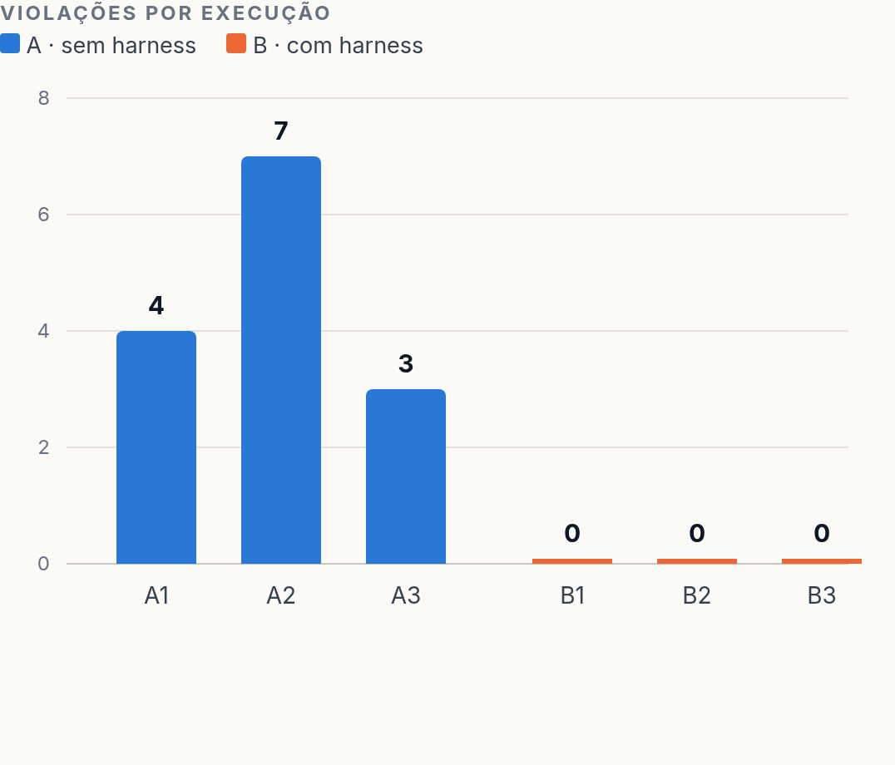
A distribuição por regra (Figura 11) mostra que o problema dominante foi o estado mutável (RX04, 9 ocorrências), seguido do subscribe fora do ciclo de vida (RX02, 3 ocorrências, uma em cada execução A). A A2 teve ainda um Subject exposto (RX03) e um controller de leilões importando o serviço de notificações (RX07). As regras RX01, RX05, RX06, RX08 e RX09 não foram violadas em nenhuma execução.
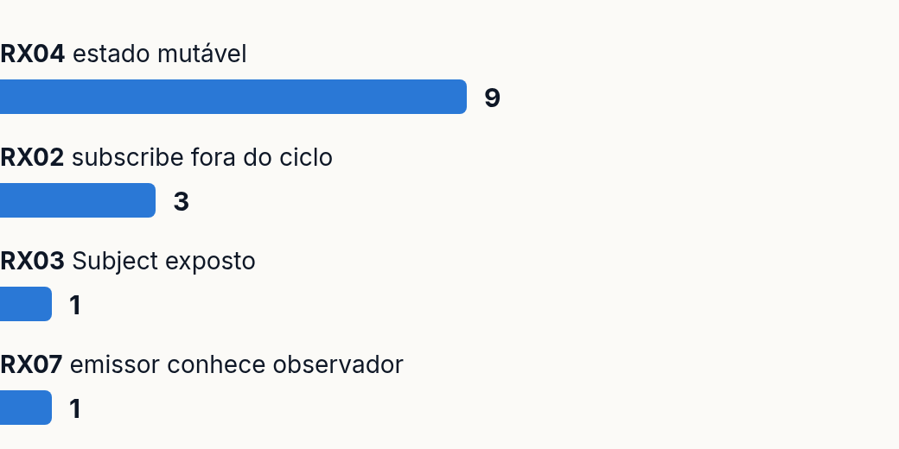
| Exec. | Regra | Local | Trecho |
|---|---|---|---|
| A1 | RX04 | src/leilao.service.ts:95 | this.registros.set(leilao.id, r) |
| RX04 | src/leilao.service.ts:98 | this.subs.add( | |
| RX02 | src/leilao.service.ts:99 | r.agendar$ (assinado ao criar cada leilão) | |
| RX04 | src/leilao.service.ts:285 | this.notificacoes.set(nome, lista) | |
| A2 | RX03 | src/leilao.service.ts:34 | readonly todosEventos$ = new Subject<EventoLeilao>() |
| RX04 | src/leilao.service.ts:135 | this.leiloes.set(...) | |
| RX02 | src/leilao.service.ts:137 | estado.prazo$ | |
| RX04 | src/notificacoes.service.ts:22 | this.titulos.set(...) | |
| RX04 | src/notificacoes.service.ts:38 | this.lideres.set(...) | |
| RX04 | src/notificacoes.service.ts:63 | this.porParticipante.set(...) | |
| RX07 | src/leiloes.controller.ts:14 | import { NotificacoesService } from './notificacoes.service.js' | |
| A3 | RX04 | src/leiloes/leiloes.service.ts:112 | this.leiloes.set(leilao.id, reg) |
| RX02 | src/leiloes/leiloes.service.ts:209 | timer(delay).subscribe(() => { | |
| RX04 | src/leiloes/leiloes.service.ts:251 | this.notificacoes.set(nome, lista) |
Os relatórios das execuções descrevem a arquitetura entregue sem harness como mista: o agente usou RxJS — fila de comandos com Subject e concatMap, switchMap(timer) por leilão —, mas guardou o estado em Map mutável nos campos da classe e criou assinaturas a cada leilão. Ou seja, o agente conhecia os operadores; o que faltou foi a arquitetura reativa.
Cada execução sem harness precisou de exatamente uma rodada de correção — o prompt de intervenção gerado pelo kit — para ser aprovada; nenhuma das execuções com harness precisou de qualquer intervenção. Não houve edições manuais nem outras mensagens humanas em nenhuma execução. A média caiu de 1 para 0, com delta de Cliff igual a 1. A hipótese H3 foi confirmada. A Figura 12 mostra a evolução das violações a cada checkpoint.
Em todas as execuções A, a única intervenção foi suficiente para zerar as violações sem quebrar nenhum teste. O que cada agente fez ao receber a revisão:
leilao.service.ts para derivar todo o estado de comandos$.pipe(scan(reduzir, ESTADO_INICIAL)) sobre cópias imutáveis (ReadonlyMap) e passou o agendamento de prazos para uma única assinatura em onModuleInit, com takeUntil(destruir$), distinctUntilChanged e switchMap(timer); o controller passou a devolver Observable.comando$ e destruir$ privados, derivou o estado de leilões e de notificações com scan puro sobre cópias imutáveis de Map, moveu as assinaturas para onModuleInit (com groupBy + switchMap(timer) nos prazos) e separou a rota de participantes em um novo ParticipantesController, deixando o serviço de notificações observar eventos$.leiloes.dominio.ts, 215 linhas) com a função decidir(estado, comando), derivou o estado com scan + shareReplay(1) e moveu as assinaturas para onModuleInit, com o encerramento via groupBy + switchMap(timer) e o prazo carregado no comando de encerramento.Esse comportamento reforça a leitura da Seção 9.4: o agente sabe escrever a versão reativa; sem o harness, ele só o faz quando é cobrado.
A mediana do tempo até o fim foi de 6 minutos em A e 4 em B. A média de A (159 min) é dominada pela pausa da A2 e não deve ser usada como medida de esforço. O custo do implementador foi, em média, US$ 0,98 por execução em A e US$ 0,48 em B; somadas, as três execuções A custaram US$ 2,94 e as três B, US$ 1,43.
Com harness, o agente usou menos chamadas de ferramenta (8 contra 11,3 em média), cometeu menos erros de ferramenta (1 contra 2,7) e gerou cerca de 10% menos tokens de saída. Chama atenção a estabilidade de B: o desvio-padrão dos tokens foi de 238 em B, contra 3 906 em A.
| Exec. | Arquivos de código | Linhas | Arquivos de teste | Casos de teste do agente | Imports do RxJS | Chamadas a subscribe |
|---|---|---|---|---|---|---|
| A1 | 5 | 421 | 0 | 0 | 12 | 2 |
| A2 | 6 | 429 | 0 | 0 | 9 | 3 |
| A3 | 5 | 351 | 1 | 4 | 10 | 3 |
| B1 | 13 | 819 | 2 | 19 | 21 | 3 |
| B2 | 13 | 578 | 3 | 23 | 23 | 3 |
| B3 | 13 | 795 | 3 | 18 | 22 | 3 |
As execuções B produziram mais código (13 arquivos e 578 a 819 linhas) organizado nos dois módulos e três camadas pedidos pelo harness, enquanto as A entregaram 5 ou 6 arquivos “achatados” (Figura 13). Em B, os casos de teste não incluem os 11 testes de contrato herdados do harness. Sem harness, A1 e A2 não escreveram nenhum teste e removeram os testes de exemplo da base; A3 escreveu 4 casos de teste ponta a ponta. Com harness, os agentes escreveram de 18 a 23 casos de teste unitários do domínio — efeito direto da regra E02.
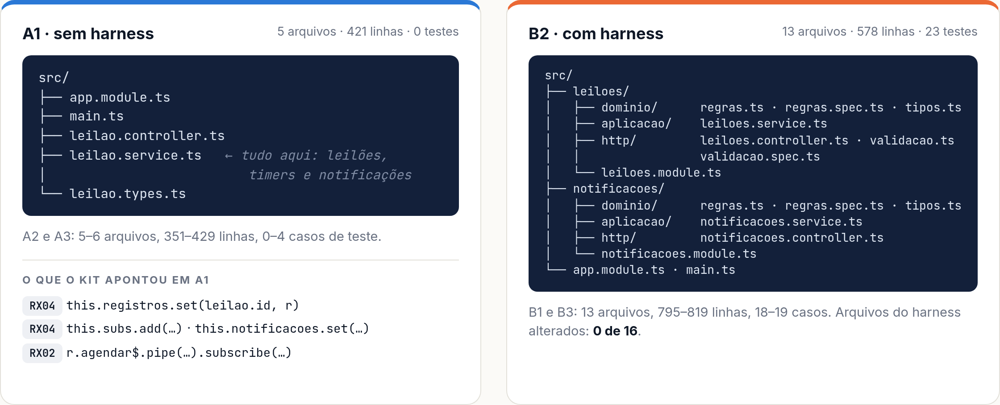
src/ na primeira entrega da A1 (sem harness) e da B2 (com harness), com as violações apontadas pelo kit na A1.O log dos hooks registra o que o harness fez em cada execução B:
| Exec. | Edições verificadas pelo hook | Edições com violação | Encerramentos bloqueados | Validações ok | Validações com falha |
|---|---|---|---|---|---|
| B1 | 0 | 0 | 0 | 2 | 0 |
| B2 | 0 | 0 | 0 | 2 | 1 |
| B3 | 0 | 0 | 0 | 3 | 0 |
Em cada execução B, o agente rodou a validação por conta própria (como manda a regra de ouro) e, ao tentar encerrar, o hook Stop rodou a validação de novo, obteve VALIDAÇÃO OK e liberou o encerramento — a última validação de cada linha da tabela é a do hook. Nenhum encerramento foi bloqueado. O caso mais ilustrativo é o da B2 (Figura 14): a primeira validação do agente falhou na etapa de testes unitários porque um teste escrito pelo próprio agente esperava a notificação errada (a participante que venceu o leilão também havia sido superada antes, e portanto devia receber LANCE_SUPERADO e LEILAO_VENCIDO); 13 segundos depois o agente corrigiu a expectativa e a validação passou.
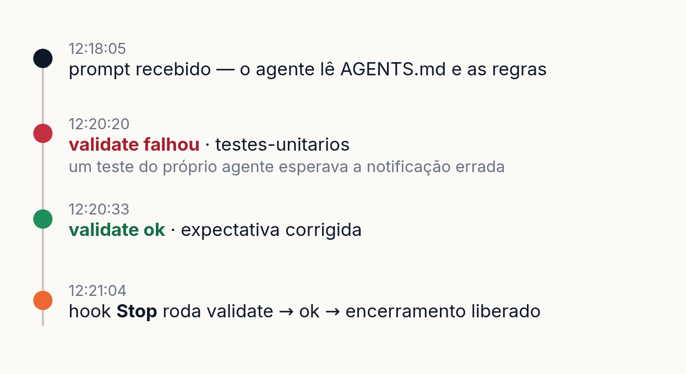
A coluna “edições verificadas pelo hook” é zero nas três execuções. A explicação está nas transcrições: em todas as seis execuções, A e B, o agente usou apenas a ferramenta Bash — criou e alterou os arquivos com comandos como cat > src/... <<'EOF' e pequenos scripts —, e o hook PostToolUse do harness observava apenas as ferramentas Edit, Write e MultiEdit.
| Exec. | Ferramentas | Chamadas |
|---|---|---|
| A1 | Bash | 7 |
| A2 | Bash | 13 |
| A3 | Bash | 14 |
| B1 | Bash | 7 |
| B2 | Bash | 8 |
| B3 | Bash | 9 |
Portanto, o efeito medido do harness veio das instruções (o agente organizou o código nas camadas pedidas e seguiu os padrões desde a primeira escrita) e da validação (rodada pelo agente e pelo hook Stop), não da verificação a cada edição.
execucoes/* têm como autor “Agente de IA”.O que os resultados significam, o que eles não permitem concluir e o que eles revelam sobre como o harness atua.
A H1 esperava menos erros funcionais com harness, e o resultado foi um empate em zero. A explicação mais simples é que, para esse modelo, a especificação foi clara e completa o bastante: o contrato HTTP descreve formatos, códigos de resposta, ordem das validações, eventos e regras de tempo, e o agente conseguiu implementá-lo corretamente nas seis tentativas — inclusive as partes que os testes do harness não cobrem, como as prorrogações e a concorrência. Uma tarefa mais difícil, uma especificação mais ambígua ou um modelo menos capaz poderiam separar as condições; isso fica como trabalho futuro.
O empate, porém, não é um resultado vazio. Ele isola o efeito do harness: as duas condições entregaram código igualmente correto do ponto de vista do comportamento, e a diferença apareceu exclusivamente na dimensão que testes funcionais não enxergam.
Sem harness, o agente produziu sempre o mesmo tipo de código: reativo na superfície, imperativo no núcleo. Esse resultado confirma, com dados das próprias execuções, a premissa do trabalho — o agente tende ao estilo mais comum, mesmo quando a tarefa pede explicitamente programação reativa. Com harness, o agente já escreveu a primeira versão na arquitetura exigida. O harness agiu de forma preventiva, e não corretiva: nenhum encerramento foi bloqueado e nenhuma violação apareceu em nenhum momento registrado.
É preciso, contudo, lembrar a ressalva de construto: o harness ensina exatamente as regras que o verificador mede, e traz padrões de código genéricos que mostram como cumpri-las. A vantagem em violações é, em parte, por construção. O que o experimento demonstra é que colocar essas regras e padrões no repositório foi suficiente para que o agente as seguisse sem nenhuma cobrança humana — e isso é precisamente o que um time que adota um paradigma gostaria de obter.
Cada execução A precisou de uma intervenção; nenhuma B. Uma intervenção parece pouco, mas aqui ela foi a forma mais barata possível de revisão: um texto escrito automaticamente pelo kit, com arquivo, linha, regra e como corrigir. Numa equipe real, alguém teria de ler 350 a 430 linhas de código, perceber que o estado mutável contraria a arquitetura e explicar a correção. Por isso o custo humano de A medido aqui é um limite inferior do custo real.
AGENTS.md.O registro dos hooks permite separar as peças. O hook pós-edição não disparou em nenhuma execução, porque os agentes escreveram arquivos por meio do terminal. O hook Stop rodou nas três execuções B, mas sempre encontrou a validação já correta. O efeito, portanto, veio da combinação de instruções (que moldaram o código desde a primeira escrita) e validação (que o agente rodou por conta própria e que, na B2, pegou um erro antes da entrega).
Isso tem duas consequências práticas. Primeiro, um harness que dependa de hooks de edição precisa observar também os comandos de terminal, ou eles podem ser contornados sem que ninguém perceba. Segundo, para atribuir o efeito a cada peça seria preciso um experimento de ablação — só instruções, só validação, só hooks —, que este trabalho não fez.
Com três execuções por condição, uma tarefa, uma stack, um agente e um modelo, os números descrevem este experimento e não permitem generalização estatística. A consistência ajuda — as três A tiveram violações e as três B nenhuma —, mas não substitui uma amostra maior. Também não é possível afirmar que o harness funcionaria igualmente com outros agentes, ou com um modelo de outra família: o harness e o kit foram construídos com o auxílio de um modelo da mesma família do agente avaliado.
Os problemas que surgiram na construção e na condução do experimento, como foram percebidos e o que foi feito em cada caso.
Problema. Ao gerar o projeto base com @nestjs/cli 12.0.15, o gerador criou AGENTS.md, CLAUDE.md, pastas de skills para agentes e o módulo de telemetria @nestjs/observe, com instruções para o agente sugerir a criação de conta. Risco. A condição A deixaria de ser “sem harness”. Solução. Tudo foi removido da base (ADR-004), com a evidência guardada em docs/evidencias/. O episódio virou também um achado: o próprio ecossistema já entrega harnesses prontos.
Problema. A variável BASE_URL, usada pela suíte de aceitação para apontar o servidor, colidia com import.meta.env.BASE_URL do Vite. Solução. A variável foi renomeada para URL_ALVO; o gabarito passou a 41/41.
Problema. O dependency-cruiser 18.9 não aceitava a opção extensionAlias, necessária para resolver imports .js que apontam para arquivos .ts. Solução. A resolução passou a usar o tsConfig do projeto, e os imports .js passaram a resolver para os arquivos .ts.
.gitignore do repositório paiProblema. O oxlint respeita o .gitignore do repositório que contém a pasta; nos projetos de teste montados dentro do repositório principal, ele não encontrava os arquivos. Solução. Cada projeto montado passou a ser um repositório git próprio — o que, de quebra, já era o desenho exigido para as execuções isoladas.
Problema. Falhas intermitentes nos testes de tempo do gabarito (Seção 5.8). Solução. O comando de encerramento passou a carregar o prazo agendado (ADR-008), a suíte passou a rodar duas vezes por checkpoint com marcação de testes instáveis (ADR-009) e a armadilha foi documentada no harness. Resultado: 410/410 execuções verdes no estresse.
Problema. No ensaio, a medida “casos de teste escritos pelo agente” contava os 11 testes de contrato do harness como se fossem do agente B. Solução. A medida passou a excluir os testes herdados da base e do harness, que são reportados à parte. O ensaio foi refeito com a versão corrigida.
Problema. Na revisão visual dos gráficos renderizados, um subtítulo aparecia cortado, um rótulo encostava na margem e a escala não tinha folga no topo. Solução. Os três pontos foram corrigidos no script de consolidação antes das execuções.
Problema. O checklist de ambiente detectou que o Node só estava no PATH de shells interativos, carregado pelo ~/.bashrc; o agente e os hooks, que rodam em processos não interativos, não o encontrariam. Solução. A correção foi documentada no protocolo (passo 0) e, antes da condução, o Node passou a ser encontrado em ~/.local/bin — a verificação inicial do condutor registrou 8 itens ok, 0 avisos e 0 erros. O script do implementador também coloca o Node 24 no PATH herdado pelo agente e pelos hooks.
Problema. A primeira execução B1 foi feita pelo mesmo agente que construiu o gabarito e o kit, com a solução em contexto e sem transcrição própria. Solução. A execução foi descartada e preservada em experimento/descartadas/ (assim como uma A1 preparada e não usada); a condução passou a outro agente, com roteiro fechado, e a implementação a uma sessão isolada disparada por script (Seção 6.5).
Problema. Alguns comandos do condutor falharam no ambiente isolado (sandbox) em que ele rodava: criação da pasta de trabalho, acesso a ~/.local/bin e escrita em .git/FETCH_HEAD. Solução. Os mesmos comandos foram reexecutados fora do sandbox, e cada caso ficou registrado no log do condutor, sem alteração no conteúdo das execuções.
Problema. Durante a intervenção da A2, a chamada do implementador terminou com 429 usage_limit_reached. Solução. Seguindo a seção de exceções do roteiro, o condutor pausou e aguardou a autorização do usuário; às 20h08 a chamada foi repetida tecnicamente, sem contar como nova intervenção. Na análise, o tempo é relatado pela mediana e a ocorrência é explicitada em todos os materiais.
Problema. O hook PostToolUse nunca disparou, porque os agentes escreveram os arquivos por meio do terminal (Seção 9.7). Solução adotada. O achado foi registrado e discutido, e não houve alteração do harness após as execuções — isso mudaria a condição B no meio do experimento. Solução proposta. Incluir o Bash no filtro do hook e, nesse caso, verificar todos os arquivos de src/ alterados desde a última verificação.
O que o trabalho entregou, o que ele mostrou e para onde ele pode seguir.
O trabalho cumpriu as duas metades do enunciado. Na primeira, construiu um harness completo para programação reativa: instruções para agentes, regras arquiteturais documentadas e verificadas por ferramentas (nove regras reativas, seis regras de camadas, três de estrutura), testes de contrato, lint genérico e arquitetural, um script de validação em sete etapas e hooks que fecham o ciclo de feedback. Na segunda, comparou a mesma funcionalidade implementada pelo mesmo agente com e sem o harness, por meio de um experimento controlado, com instrumento validado, condução padronizada e registro completo — 62 commits no ramo principal, um ramo por execução e um relatório por execução.
Três lições resumem o experimento:
A hipótese sobre erros funcionais (H1) não foi confirmada — as duas condições acertaram todo o comportamento —, e as hipóteses sobre violações (H2) e intervenções (H3) foram confirmadas, com efeito máximo pelo delta de Cliff. Todas essas conclusões valem para o escopo do experimento e devem ser lidas à luz das ameaças discutidas na Seção 6.8.
Bash.CLIFF, N. Dominance statistics: ordinal analyses to answer ordinal questions. Psychological Bulletin, v. 114, n. 3, p. 494–509, 1993.
GAMMA, E.; HELM, R.; JOHNSON, R.; VLISSIDES, J. Design Patterns: Elements of Reusable Object-Oriented Software. Reading: Addison-Wesley, 1994.
MANN, H. B.; WHITNEY, D. R. On a test of whether one of two random variables is stochastically larger than the other. The Annals of Mathematical Statistics, v. 18, n. 1, p. 50–60, 1947.
ROMANO, J.; KROMREY, J. D.; CORAGGIO, J.; SKOWRONEK, J. Appropriate statistics for ordinal level data: should we really be using t-test and Cohen’s d for evaluating group differences on the NSSE and other surveys? In: ANNUAL MEETING OF THE FLORIDA ASSOCIATION OF INSTITUTIONAL RESEARCH, 2006.
SALES, T. de. Paradigma orientado a eventos — programação reativa. Slides da disciplina Paradigmas de Linguagens de Programação. Arapiraca: UFAL, [s.d.].
SALES, T. de. PLP — Aula 1: introdução e avaliação de linguagens. Slides da disciplina Paradigmas de Linguagens de Programação. Arapiraca: UFAL, [s.d.].
ANTHROPIC. Claude Code: documentação (memória com CLAUDE.md, ferramentas, modo não interativo e hooks), versão 2.1.x. Consultada em nov. 2026.
NESTJS. NestJS Documentation. Disponível em: https://docs.nestjs.com. Consultada em nov. 2026.
RXJS. RxJS Documentation. Disponível em: https://rxjs.dev. Consultada em nov. 2026.
REACTIVEX. ReactiveX: an API for asynchronous programming with observable streams. Disponível em: https://reactivex.io. Consultada em nov. 2026.
WHATWG. HTML Living Standard — Server-sent events. Disponível em: https://html.spec.whatwg.org. Consultada em nov. 2026.
VERWEIJ, S. dependency-cruiser, versão 18.9.0. Disponível em: https://github.com/sverweij/dependency-cruiser.
OXC. oxlint. Disponível em: https://oxc.rs. Consultada em nov. 2026.
VITEST. Vitest Documentation. Disponível em: https://vitest.dev. Consultada em nov. 2026.
Documentação deste trabalho, no repositório: docs/01-visao-geral.md a docs/06-instrumento-de-avaliacao.md, docs/decisoes.md, docs/linha-do-tempo.md, docs/historico-git.md, experimento/protocolo.md, experimento/ROTEIRO-CONDUTOR.md, experimento/resultados/ e experimento/auditoria/log-condutor.md.
Subject privado de comandos.| ADR | Decisão | Motivo principal |
|---|---|---|
| 001 | Somente backend, com NestJS + RxJS | testes de API estáveis; RxJS nativo; regras verificáveis; métricas objetivas |
| 002 | Domínio: leilão em tempo real | eventos, tempo, observadores, concorrência; testável por HTTP |
| 003 | 2 condições × 3 repetições, ordem ABBAAB | capturar o não determinismo; equilibrar efeitos de ordem |
| 004 | Base sem os arquivos de agente do scaffold | evitar um “mini-harness” do fabricante na condição A |
| 005 | Execuções em pastas isoladas, histórico importado como ramo | o agente não pode ver kit, gabarito nem outras execuções |
| 006 | Condução com intervenções padronizadas | remover a subjetividade e tornar a contagem replicável |
| 007 | Testes caixa-preta + verificador estático, iguais para A e B | valer para qualquer implementação; ser justo com A |
| 008 | Encerramento guiado pelo prazo agendado | temporizador do Node dispara até 1 ms antes |
| 009 | Suíte de aceitação 2× por checkpoint | falhas intermitentes de tempo e concorrência |
| 010 | Hooks PostToolUse, Stop (até 3 bloqueios) e UserPromptSubmit | fechar o ciclo de feedback sem laços infinitos |
| 011 | Harness com padrões genéricos, sem a solução | conhecimento que um time real teria; declarado como ameaça |
| 012 | Análise descritiva com delta de Cliff | com 3 × 3, nenhum teste atinge p < 0,05 |
| 013 | Testes do harness como subconjunto da especificação | evitar que B passe “por construção” |
Texto integral do prompt de intervenção gerado pelo kit no checkpoint de entrega da execução A1 (experimento/execucoes/A1/checkpoints/01-entrega/intervencao.md) — o único feedback que o agente recebeu nessa execução.
Revisei a implementação e encontrei os problemas abaixo. Corrija todos eles, mantendo os requisitos da tarefa original. ## Violações das regras de arquitetura reativa (4) O projeto deve seguir o paradigma reativo/orientado a eventos com RxJS. Estas ocorrências violam as regras: ### RX04 — estado-mutavel Problema: Estado mutado de forma imperativa (campo da classe ou variável de módulo). - `src/leilao.service.ts:95` — `this.registros.set(leilao.id, r)` - `src/leilao.service.ts:98` — `this.subs.add(` - `src/leilao.service.ts:285` — `this.notificacoes.set(nome, lista)` Como corrigir: Não guarde estado em campos/variáveis alterados por métodos. Derive o estado do fluxo de eventos com scan()/reduce puros e exponha-o como Observable (ex.: estado$ = eventos$.pipe(scan(evoluir, inicial), shareReplay(1))). ### RX02 — subscribe-fora-do-ciclo-de-vida Problema: subscribe() fora do construtor/onModuleInit/onApplicationBootstrap (ou dentro de um controller). - `src/leilao.service.ts:99` — `r.agendar$` Como corrigir: Controllers e métodos chamados por requisição devem DEVOLVER um Observable (o NestJS assina). Assinaturas permanentes (efeitos colaterais, projeções) ficam no onModuleInit, com takeUntil(destruir$) liberado no onModuleDestroy.
Requisitos: Linux ou macOS, Node.js 24, git e Claude Code. As versões de todas as dependências estão fixadas nos package-lock.json.
(cd avaliacao && npm ci) # dependências do kit (cd avaliacao && npm run test:verificador) # testes do verificador (10/10) scripts/lib/montar-projeto.sh /tmp/ref harness --overlay avaliacao/referencia (cd /tmp/ref && npm run validate) # gabarito passa no harness node avaliacao/avaliar.mjs --projeto /tmp/ref --saida /tmp/aval # gabarito aprovado scripts/lib/montar-projeto.sh /tmp/anti base --overlay avaliacao/anti-gabarito node avaliacao/avaliar.mjs --projeto /tmp/anti --saida /tmp/aval-anti # 41/41, 12 violações
scripts/verificar-ambiente.sh # checklist do ambiente scripts/preparar-execucao.sh A1 # pasta isolada + git scripts/rodar-implementador.sh A1 inicial # envia a tarefa ao agente scripts/checkpoint.sh A1 entrega # avalia a primeira entrega scripts/rodar-implementador.sh A1 intervencao # se reprovado scripts/checkpoint.sh A1 correcao scripts/finalizar-execucao.sh A1 # importa o histórico e gera o resumo node scripts/consolidar-resultados.mjs # depois das seis execuções
git diff execucoes/A1/entrega execucoes/A1/final -- src/ # o que mudou após a intervenção git log --format='%h %an | %s' execucoes/B1 # commits do agente cat experimento/execucoes/A1/checkpoints/01-entrega/intervencao.md cat experimento/execucoes/B2/harness-hooks.log # o harness trabalhando
├── Instruções.txt enunciado original ├── docs/ documentação: visão geral, fundamentação, sistema, harness, │ metodologia, instrumento, decisões, linha do tempo, histórico git ├── projetos/ │ ├── base/ NestJS 12 limpo — o que a condição A recebe │ └── harness/ camada de harness — somada à base na condição B │ ├── AGENTS.md · CLAUDE.md │ ├── docs/ arquitetura.md · regras-reativas.md │ ├── scripts/ validar.sh · verificar-reatividade.mjs · verificar-estrutura.mjs │ │ └── hooks/ apos-editar.sh · ao-parar.sh · ao-receber-prompt.sh │ ├── test/contrato/ 11 testes de contrato │ ├── .claude/settings.json · .dependency-cruiser.cjs ├── avaliacao/ kit OCULTO: 41 testes, avaliador, gabarito, anti-gabarito, │ testes do verificador ├── experimento/ │ ├── prompts/tarefa.md a especificação entregue ao agente (idêntica em A e B) │ ├── protocolo.md · ROTEIRO-CONDUTOR.md · config-implementador.env │ ├── execucoes/<ID>/ registros, checkpoints, sessão, hooks, resumo e relatório │ ├── resultados/ tabelas, CSV, gráficos e relatório final │ ├── auditoria/ log do condutor │ └── descartadas/ execuções descartadas, preservadas para auditoria ├── scripts/ condução do experimento, consolidação e utilitários └── materiais/ slides, roteiro e este livro (fontes HTML e PDFs)